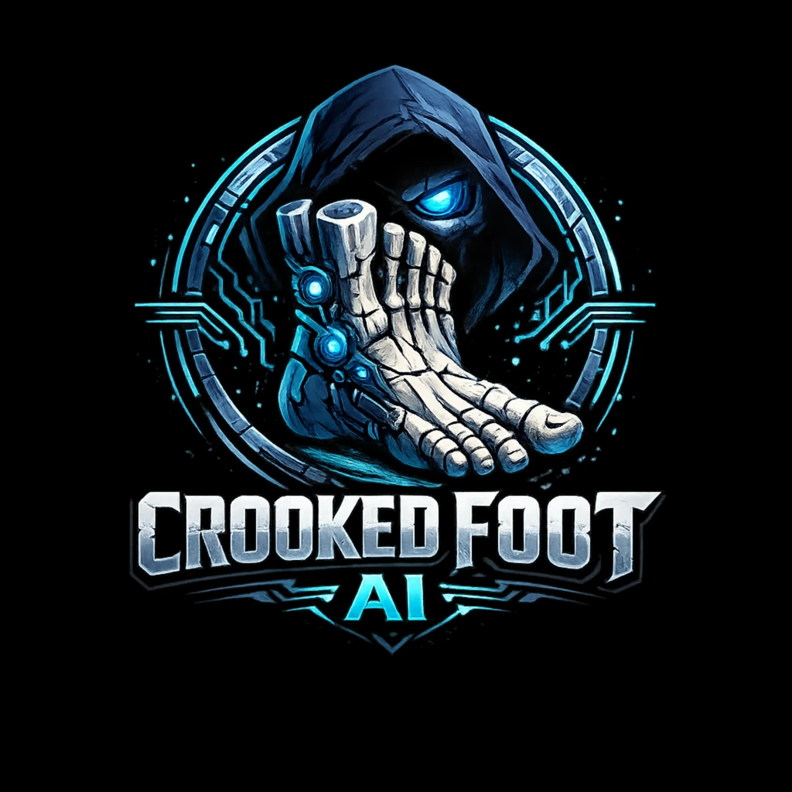

<!DOCTYPE html>
<html lang="en">
<head>
<meta charset="UTF-8">
<meta name="viewport" content="width=device-width, initial-scale=1.0">
<title>Crooked Foot AI — GTM Campaign Engine · Alex Maring</title>
<link rel="icon" type="image/png" href="./logo.png">
<!-- Open Graph / Social Preview -->
<meta property="og:type" content="website">
<meta property="og:url" content="https://gtm-campaign-engine.netlify.app/">
<meta property="og:title" content="Crooked Foot AI — GTM Campaign Engine">
<meta property="og:description" content="AI-native revenue intelligence for enterprise B2B teams. 94% forecast accuracy, 14-signal pipeline scoring, zero black box.">
<meta property="og:image" content="https://gtm-campaign-engine.netlify.app/linkedin-featured.png">
<meta property="og:image:width" content="1200">
<meta property="og:image:height" content="628">
<!-- Twitter / X Card -->
<meta name="twitter:card" content="summary_large_image">
<meta name="twitter:title" content="Crooked Foot AI — GTM Campaign Engine">
<meta name="twitter:description" content="AI-native revenue intelligence for enterprise B2B teams. 94% forecast accuracy, 14-signal pipeline scoring, zero black box.">
<meta name="twitter:image" content="https://gtm-campaign-engine.netlify.app/linkedin-featured.png">
<link href="https://fonts.googleapis.com/css2?family=Inter:wght@400;500;600;700;800;900&display=swap" rel="stylesheet">
<style>
  *, *::before, *::after { box-sizing: border-box; margin: 0; padding: 0; }
  html { scroll-behavior: smooth; }
  body { background: #FFFFFF; color: #0A0A1A; font-family: 'Inter', sans-serif; min-height: 100vh; }
  button { font-family: 'Inter', sans-serif; cursor: pointer; }
  button:focus { outline: none; }
  ::-webkit-scrollbar { width: 4px; height: 4px; }
  ::-webkit-scrollbar-track { background: #F7F7F8; }
  ::-webkit-scrollbar-thumb { background: #D1D5DB; border-radius: 2px; }
  @keyframes ticker { 0% { transform: translateX(0); } 100% { transform: translateX(-50%); } }
  @keyframes fadeInUp { from { opacity: 0; transform: translateY(20px); } to { opacity: 1; transform: translateY(0); } }
  @keyframes cyanPulse { 0%,100% { box-shadow: 0 0 16px rgba(0,168,216,0.25); } 50% { box-shadow: 0 0 32px rgba(0,168,216,0.50), 0 0 60px rgba(0,168,216,0.15); } }
  @keyframes slideIn { from { opacity: 0; transform: translateX(-12px); } to { opacity: 1; transform: translateX(0); } }
  .fade-in { animation: fadeInUp 0.6s ease-out both; }
  .fade-in-1 { animation: fadeInUp 0.6s ease-out 0.1s both; }
  .fade-in-2 { animation: fadeInUp 0.6s ease-out 0.2s both; }
  .pulse-btn { animation: cyanPulse 3s ease-in-out infinite; }
  .card-hover { transition: box-shadow 0.2s ease, border-color 0.2s ease, transform 0.2s ease; }
  .card-hover:hover { box-shadow: 0 4px 24px rgba(0,168,216,0.12); border-color: rgba(0,168,216,0.35) !important; transform: translateY(-1px); }
  .bar-animate { transition: width 1.2s cubic-bezier(0.25, 0.46, 0.45, 0.94); }
  .section-divider { height: 1px; background: linear-gradient(90deg, transparent, #E5E7EB 20%, #E5E7EB 80%, transparent); margin: 0; }

  /* ── Mobile Nav ── */
  .nav-links { display: flex; gap: 4px; align-items: center; }
  .nav-hamburger { display: none; flex-direction: column; justify-content: center; gap: 5px; cursor: pointer; background: transparent; border: none; padding: 6px; }
  .nav-hamburger span { display: block; width: 22px; height: 2px; background: #0A0A1A; border-radius: 2px; transition: all 0.2s; }
  .mobile-nav-menu { display: none; position: fixed; top: 58px; left: 0; right: 0; background: rgba(255,255,255,0.98); backdrop-filter: blur(12px); border-bottom: 1px solid #E5E7EB; padding: 16px 20px; z-index: 99; flex-direction: column; gap: 4px; box-shadow: 0 4px 16px rgba(0,0,0,0.08); }
  .mobile-nav-menu.open { display: flex; }
  .mobile-nav-btn { background: transparent; border: none; padding: 12px 16px; text-align: left; font-size: 14px; font-weight: 600; color: #6B7280; border-radius: 8px; cursor: pointer; font-family: 'Inter', sans-serif; transition: all 0.15s; }
  .mobile-nav-btn.nav-active { background: rgba(0,153,204,0.08); color: #0099CC; }

  /* ── Section header ── */
  .section-h2 { font-size: 34px; }

  /* ── SubTab scroll wrapper ── */
  .subtab-scroll-wrap { overflow-x: auto; max-width: 100%; padding-bottom: 4px; margin-bottom: 28px; }
  .subtab-scroll-wrap > div { margin-bottom: 0 !important; }

  /* ── Studio two-panel layout ── */
  .studio-layout { display: flex; }

  /* ── Platform strip hint ── */
  .platform-hint { display: flex; align-items: center; }

  /* ── Mobile responsive breakpoint ── */
  @media (max-width: 768px) {
    /* Nav */
    .nav-links { display: none !important; }
    .nav-hamburger { display: flex !important; }

    /* Studio panels stack vertically */
    .studio-layout { flex-direction: column !important; min-height: unset !important; }
    .studio-left-panel { width: 100% !important; border-right: none !important; border-bottom: 1px solid #E5E7EB !important; overflow-y: visible !important; padding: 20px 16px !important; flex: unset !important; }
    .studio-right-panel { padding: 20px 16px !important; overflow-y: visible !important; flex: unset !important; width: 100% !important; }

    /* Section padding overrides */
    #pipeline-intelligence { padding: 40px 16px !important; }
    #channel-pulse { padding: 40px 16px !important; }
    #channel-pulse > div { padding: 0 !important; }
    #gtm-blueprint { padding: 40px 16px !important; }
    #marketing-assets { padding: 40px 16px !important; }
    #marketing-assets > div { padding: 0 !important; }
    #content-engine > div:first-child { padding: 40px 16px 0 !important; }
    #campaign-studio > div:first-child { padding-left: 16px !important; padding-right: 16px !important; }

    /* Hero */
    .hero-section { padding: 40px 16px 40px !important; }
    .ticker-wrap { margin-left: -16px !important; margin-right: -16px !important; margin-bottom: -40px !important; }

    /* Typography */
    .section-h2 { font-size: 24px !important; line-height: 1.2 !important; }

    /* Platform strip */
    .platform-strip { padding: 12px 16px !important; }
    .platform-hint { display: none !important; }

    /* CTA grid */
    .cta-row { flex-direction: column !important; align-items: stretch !important; }
    .cta-row a { text-align: center !important; justify-content: center !important; }

    /* Identity bar — center on wrap */
    .identity-bar { justify-content: center !important; }
    .identity-bar-text { display: none !important; }
    .identity-bar-linkedin { width: 100% !important; justify-content: center !important; }
  }

  @media (max-width: 480px) {
    .section-h2 { font-size: 20px !important; }
    .studio-left-panel { padding: 16px 14px !important; }
    .studio-right-panel { padding: 16px 14px !important; }
  }
</style>
</head>
<body>
<div id="app"></div>

<script src="https://cdnjs.cloudflare.com/ajax/libs/react/18.2.0/umd/react.production.min.js"></script>
<script src="https://cdnjs.cloudflare.com/ajax/libs/react-dom/18.2.0/umd/react-dom.production.min.js"></script>
<script src="https://cdnjs.cloudflare.com/ajax/libs/babel-standalone/7.23.5/babel.min.js"></script>

<script type="text/babel">
const { useState, useRef, useEffect } = React;

/* ── Brand tokens — light mode ── */
const S = {
  bg:          "#FFFFFF",
  surface:     "#F7F7F8",
  elevated:    "#FFFFFF",
  border:      "#E5E7EB",
  cyan:        "#0099CC",
  cyanDim:     "rgba(0,153,204,0.08)",
  cyanBorder:  "rgba(0,153,204,0.28)",
  cyanHover:   "#007AA3",
  cyanDeep:    "#005C7A",
  text:        "#0A0A1A",
  muted:       "#6B7280",
  light:       "#9CA3AF",
  green:       "#059669",
  greenDim:    "rgba(5,150,105,0.08)",
  amber:       "#D97706",
  amberDim:    "rgba(217,119,6,0.08)",
  red:         "#DC2626",
  redDim:      "rgba(220,38,38,0.08)",
};

/* ── Campaign Copy Data — Crooked Foot AI: Revenue Intelligence Platform ── */
const COPY = {
  "SaaS / Technology|VP of Sales|Gong Replacement": {
    linkedInHeadline: "Your reps are flying blind. Gong tells you what happened — not what to do next.",
    linkedInBody: "Salesforce, HubSpot, and Notion already trust Crooked Foot AI to predict deal outcomes before QBR prep begins. Predictive revenue intelligence. No black box. Full pipeline transparency from first touch to closed-won.",
    proof: "Used by: Salesforce · HubSpot · Notion",
    cta: "See the Revenue Intelligence Demo →",
    emailSubject: "Why your top reps are losing deals Gong flagged as 'on track'",
    emailOpener: "Hi [First Name], conversation intelligence tells you what was said — revenue intelligence tells you what will happen. [Company]'s pipeline deserves the upgrade.",
    landingHeadline: "Revenue intelligence that predicts deals, not just records them.",
    landingSub: "How Salesforce, HubSpot, and Notion replaced reactive call recording with predictive deal intelligence using Crooked Foot AI.",
    landingCta: "Request a Demo →",
  },
  "SaaS / Technology|CRO / Chief Revenue Officer|Forecast Accuracy": {
    linkedInHeadline: "Your Q2 forecast is wrong. Here's how to know by April 15th.",
    linkedInBody: "Most CROs discover their forecast is off when it's too late to recover. Crooked Foot AI's multi-signal pipeline model gives revenue leaders a 94% forecast accuracy window — 45 days before quarter close. Salesforce, Notion, and Intercom run on it.",
    proof: "Used by: Salesforce · Intercom · Notion",
    cta: "Run Your Forecast Audit →",
    emailSubject: "A 94% accurate forecast model. Here's what [Company] would need to get there.",
    emailOpener: "Hi [First Name], most revenue forecasts rely on rep-submitted CRM data — which is why they're wrong 60% of the time. Crooked Foot AI builds the forecast from deal signals, not rep opinions.",
    landingHeadline: "94% forecast accuracy — 45 days before quarter close.",
    landingSub: "How enterprise revenue leaders at Salesforce, Intercom, and Notion are replacing gut-check forecasting with AI-powered deal signal intelligence.",
    landingCta: "Run Your Free Forecast Audit →",
  },
  "Financial Services|VP of Sales|Pipeline Visibility": {
    linkedInHeadline: "Your pipeline review took 3 hours. It should take 8 minutes.",
    linkedInBody: "BlackRock, Fidelity, and Morgan Stanley run pipeline reviews in under 10 minutes with Crooked Foot AI's pre-built deal intelligence layer. No spreadsheet pulling. No manual rep updates. Just signal, risk, and recommended action — before the meeting starts.",
    proof: "Used by: BlackRock · Fidelity · Morgan Stanley",
    cta: "See the Pipeline Intelligence Demo →",
    emailSubject: "How BlackRock cut pipeline review prep from 3 hours to 8 minutes",
    emailOpener: "Hi [First Name], every pipeline review at [Company] starts with someone pulling reports no one trusts. Crooked Foot AI changes that — pre-built deal intelligence delivered to your inbox before the call.",
    landingHeadline: "Pipeline intelligence delivered before the meeting starts.",
    landingSub: "How financial services revenue teams at BlackRock, Fidelity, and Morgan Stanley are running 8-minute pipeline reviews with AI-powered deal signals.",
    landingCta: "Download the Pipeline Intelligence Guide →",
  },
  "Financial Services|CRO / Chief Revenue Officer|Forecast Accuracy": {
    linkedInHeadline: "One bad quarter from a missed forecast is one too many for your board.",
    linkedInBody: "In financial services, a missed revenue forecast doesn't just disappoint investors — it triggers board review and resets trust. BlackRock, Fidelity, and JPMorgan chose Crooked Foot AI because 94% forecast accuracy isn't a nice-to-have in regulated financial environments. It's table stakes.",
    proof: "Used by: BlackRock · JPMorgan · Fidelity",
    cta: "Book a Revenue Intelligence Review →",
    emailSubject: "The forecast accuracy gap your CFO is going to ask about.",
    emailOpener: "Hi [First Name], financial services boards don't tolerate forecast surprises. [Company]'s revenue model deserves the same level of rigor your investment models get — and Crooked Foot AI builds it from deal signals, not CRM guesswork.",
    landingHeadline: "Board-ready revenue forecasting for financial services.",
    landingSub: "How BlackRock, Fidelity, and JPMorgan use AI-powered deal intelligence to deliver 94% forecast accuracy — every quarter.",
    landingCta: "Download the Financial Services Revenue Guide →",
  },
  "Healthcare|RevOps Director|Pipeline Visibility": {
    linkedInHeadline: "Healthcare deals take 9 months. You need to know at month 3 which ones won't close.",
    linkedInBody: "Providence Health, Anthem, and UnitedHealth use Crooked Foot AI's long-cycle deal intelligence to surface at-risk opportunities before they stall. Multi-signal health scoring. Stakeholder map tracking. Automatic re-engagement trigger logic.",
    proof: "Used by: Providence Health · Anthem · UnitedHealth",
    cta: "See Long-Cycle Deal Intelligence →",
    emailSubject: "Which of [Company]'s open healthcare deals will stall in Q3?",
    emailOpener: "Hi [First Name], in healthcare sales, a stalled deal costs 9 months of enterprise resource. Crooked Foot AI surfaces the signal at month 3 — not month 8.",
    landingHeadline: "Long-cycle deal intelligence for healthcare enterprise sales.",
    landingSub: "How Providence Health, Anthem, and UnitedHealth reduced pipeline churn by 40% with AI-powered deal health monitoring.",
    landingCta: "Download the Healthcare Sales Intelligence Guide →",
  },
  "Manufacturing|VP of Sales|Sales Velocity": {
    linkedInHeadline: "Your deals move slower than your competitors'. Here's the data.",
    linkedInBody: "Caterpillar, Honeywell, and Emerson use Crooked Foot AI to identify exactly where deals stall in the manufacturing sales cycle. Average deal velocity improvement: 28% in the first 90 days. Pipeline gap from approval to close — identified and fixed.",
    proof: "Used by: Caterpillar · Honeywell · Emerson",
    cta: "Run a Sales Velocity Audit →",
    emailSubject: "Where [Company]'s deals are stalling — and the signal to fix it.",
    emailOpener: "Hi [First Name], Caterpillar identified 3 systematic deal stall points in their enterprise cycle using Crooked Foot AI. Within 90 days, deal velocity improved 28%. I can show [Company] the same analysis in 30 minutes.",
    landingHeadline: "28% faster deal velocity in 90 days — the manufacturing sales intelligence playbook.",
    landingSub: "How Caterpillar, Honeywell, and Emerson use AI-powered deal signal analysis to eliminate systematic stall points in complex enterprise sales cycles.",
    landingCta: "Run Your Free Sales Velocity Audit →",
  },
  "Professional Services|RevOps Director|Competitive Loss Rate": {
    linkedInHeadline: "You lose 34% of deals to the same competitor. You just don't know it yet.",
    linkedInBody: "McKinsey Digital, Accenture, and Deloitte use Crooked Foot AI's competitive loss intelligence to identify systematic loss patterns before they become a category problem. Win/loss signal analysis. Competitor battlecard refresh triggers. Re-entry opportunity detection.",
    proof: "Used by: McKinsey Digital · Accenture · Deloitte",
    cta: "Run a Competitive Loss Analysis →",
    emailSubject: "Which competitor is taking 34% of [Company]'s deals?",
    emailOpener: "Hi [First Name], most competitive loss analysis is done post-mortem — after the deal is gone. Crooked Foot AI surfaces competitive loss patterns in real time, so your team can course-correct before the decision is made.",
    landingHeadline: "Competitive loss intelligence for professional services revenue teams.",
    landingSub: "How McKinsey Digital, Accenture, and Deloitte use AI-powered loss signal analysis to cut competitive loss rates by 31% in 6 months.",
    landingCta: "Run Your Free Competitive Loss Analysis →",
  },
  "Professional Services|CRO / Chief Revenue Officer|Gong Replacement": {
    linkedInHeadline: "Gong records the conversation. Crooked Foot predicts the outcome.",
    linkedInBody: "For professional services firms where a single deal represents $500K–$5M in revenue, knowing what was said isn't enough. McKinsey Digital, BCG, and EY chose Crooked Foot AI because predictive deal intelligence — not call recordings — is what moves revenue.",
    proof: "Used by: McKinsey Digital · BCG · EY",
    cta: "See the Professional Services Demo →",
    emailSubject: "The difference between conversation intelligence and revenue intelligence — for $5M deals.",
    emailOpener: "Hi [First Name], at [Company]'s deal size, replaying call recordings isn't the analysis you need. Crooked Foot AI tells your revenue team which $5M deals will close and why — before the final stakeholder meeting.",
    landingHeadline: "Revenue intelligence for high-value professional services deals.",
    landingSub: "Why McKinsey Digital, BCG, and EY use predictive deal scoring instead of conversation intelligence for their most complex enterprise opportunities.",
    landingCta: "Request a Demo →",
  },
};

const CUSTOMERS = {
  "SaaS / Technology": "Salesforce, HubSpot, and Notion",
  "Financial Services": "BlackRock, Fidelity, and JPMorgan",
  "Healthcare": "Providence Health, Anthem, and UnitedHealth",
  "Manufacturing": "Caterpillar, Honeywell, and Emerson",
  "Professional Services": "McKinsey Digital, Accenture, and Deloitte",
};

const PAINS = {
  "Gong Replacement": "reactive conversation recording vs. predictive intelligence",
  "Forecast Accuracy": "forecast miss risk",
  "Pipeline Visibility": "pipeline opacity and manual review burden",
  "Sales Velocity": "deal cycle drag and systematic stall points",
  "Competitive Loss Rate": "systematic competitive loss patterns",
};

const PROOF_MAP = {
  "SaaS / Technology": "Salesforce · HubSpot · Notion",
  "Financial Services": "BlackRock · Fidelity · JPMorgan",
  "Healthcare": "Providence Health · Anthem · UnitedHealth",
  "Manufacturing": "Caterpillar · Honeywell · Emerson",
  "Professional Services": "McKinsey Digital · Accenture · Deloitte",
};

function fallback(v, p, t) {
  const c = CUSTOMERS[v] || "Global 2000 enterprises";
  const pain = PAINS[t] || "revenue intelligence challenges";
  const proof = PROOF_MAP[v] || "Global 2000 enterprises";
  const isGong = t === "Gong Replacement";
  const isForecast = t === "Forecast Accuracy";
  const isVelocity = t === "Sales Velocity";
  let headline, body, emailSub, emailOpen, landH, landS, cta;
  if (isGong) {
    headline = `Conversation intelligence records what happened. Revenue intelligence predicts what happens next.`;
    body = `${c} replaced Gong with Crooked Foot AI for one reason: recording deals isn't the same as predicting them. Business-logic-first deal scoring with zero black box. Full pipeline transparency.`;
    emailSub = `The conversation intelligence gap your CRO is starting to notice`;
    emailOpen = `Hi [First Name], Gong tells you what your reps said. Crooked Foot AI tells you which deals [Company] will close — and which ones are already lost. Worth 20 minutes?`;
    cta = "See the Revenue Intelligence Demo →";
  } else if (isForecast) {
    headline = `94% forecast accuracy — 45 days before quarter close. No spreadsheets.`;
    body = `${c} use Crooked Foot AI's multi-signal pipeline model to eliminate forecast surprises. Deal signal intelligence, stakeholder momentum tracking, and AI-powered risk flags — delivered before your board meeting.`;
    emailSub = `The forecast accuracy problem ${v.toLowerCase()} revenue leaders aren't talking about`;
    emailOpen = `Hi [First Name], most ${v.toLowerCase()} forecasts are built on rep-submitted CRM data — which is why they're wrong 60% of the time. [Company]'s revenue model deserves better.`;
    cta = "Run Your Forecast Audit →";
  } else if (isVelocity) {
    headline = `Your deals are stalling in the same place. Here's the signal.`;
    body = `${c} use Crooked Foot AI to identify systematic deal stall patterns and fix them — before they become a quota problem. Average velocity improvement: 28% in 90 days.`;
    emailSub = `Where ${v.toLowerCase()} deals stall — and how to fix it`;
    emailOpen = `Hi [First Name], every ${v.toLowerCase()} revenue team has 2–3 systematic deal stall points they don't know exist. Crooked Foot AI surfaces them in the first 30 days.`;
    cta = "Run a Sales Velocity Audit →";
  } else {
    headline = `Is your ${v.toLowerCase()} revenue intelligence built on signals or guesswork?`;
    body = `${c} chose Crooked Foot AI because ${pain} is the number one reason enterprise revenue teams miss quota. Predictive deal intelligence. No black box. Full pipeline transparency.`;
    emailSub = `The ${pain} challenge facing ${v.toLowerCase()} revenue leaders in 2026`;
    emailOpen = `Hi [First Name], ${v.toLowerCase()} revenue teams navigating ${pain} are asking the same question: can we trust what our pipeline is telling us? Crooked Foot AI was built to answer that with a hard yes.`;
    cta = "Book a Demo →";
  }
  return {
    linkedInHeadline: headline, linkedInBody: body,
    proof: `Used by: ${proof}`, cta,
    emailSubject: emailSub, emailOpener: emailOpen,
    landingHeadline: `Crooked Foot AI for ${v}: ${isForecast?"94% forecast accuracy, no spreadsheets":isGong?"predictive revenue intelligence, not call recording":"AI-powered deal intelligence for complex enterprise sales"}.`,
    landingSub: `How ${v.toLowerCase()} revenue leaders are solving ${pain} with an AI revenue intelligence platform trusted by ${c}.`,
    landingCta: cta,
  };
}

function getCopy(v, p, t) { return COPY[`${v}|${p}|${t}`] || fallback(v, p, t); }

/* ── Hooks ── */
function useCountUp(end, duration, start) {
  const [val, setVal] = useState(0);
  useEffect(() => {
    if (!start) return;
    const n = parseFloat(String(end).replace(/[^0-9.]/g,''));
    if (isNaN(n)) { setVal(end); return; }
    const t0 = Date.now();
    const tick = () => {
      const p = Math.min((Date.now()-t0)/duration, 1);
      const e = 1-Math.pow(1-p,3);
      setVal(Math.round(n*e*10)/10);
      if (p < 1) requestAnimationFrame(tick);
    };
    requestAnimationFrame(tick);
  }, [start, end, duration]);
  return val;
}

function useInView(ref, threshold=0.2) {
  const [inView, setInView] = useState(false);
  useEffect(() => {
    if (!ref.current) return;
    const obs = new IntersectionObserver(([e]) => { if (e.isIntersecting) { setInView(true); obs.disconnect(); } }, { threshold });
    obs.observe(ref.current);
    return () => obs.disconnect();
  }, [ref]);
  return inView;
}

/* ── Shared UI ── */
function KPICard({ value, label, prefix="", suffix="", color }) {
  const ref = useRef(null);
  const inView = useInView(ref, 0.3);
  const n = parseFloat(String(value).replace(/[^0-9.]/g,''));
  const counted = useCountUp(n, 1500, inView);
  const isDecimal = String(value).includes('.');
  const display = isNaN(n) ? value : prefix+(isDecimal?counted.toFixed(1):Math.round(counted))+suffix;
  const c = color || S.cyan;
  return (
    <div ref={ref} className="card-hover" style={{flex:"1 1 200px",background:"#fff",border:`1px solid ${S.border}`,borderRadius:12,padding:"22px 24px",boxShadow:"0 1px 4px rgba(0,0,0,0.06)",position:"relative",overflow:"hidden"}}>
      <div style={{position:"absolute",top:0,left:0,right:0,height:3,background:`linear-gradient(90deg, ${S.cyan}, ${S.cyanHover})`}} />
      <div style={{fontSize:10,fontWeight:700,letterSpacing:"0.12em",textTransform:"uppercase",color:S.muted,marginBottom:10}}>{label}</div>
      <div style={{fontSize:34,fontWeight:900,color:c,letterSpacing:"-0.02em"}}>{display}</div>
    </div>
  );
}

function SelectorGroup({ label, options, value, onChange }) {
  return (
    <div style={{marginBottom:20}}>
      <div style={{fontSize:10,fontWeight:700,letterSpacing:"0.12em",textTransform:"uppercase",color:S.cyan,marginBottom:8}}>{label}</div>
      <div style={{display:"flex",flexDirection:"column",gap:5}}>
        {options.map(opt => {
          const active = value===opt;
          return (
            <button key={opt} onClick={()=>onChange(opt)} style={{
              background: active ? S.cyanDim : "transparent",
              border:`1px solid ${active ? S.cyanBorder : S.border}`,
              borderRadius:8, padding:"9px 14px",
              color: active ? S.text : S.muted,
              fontSize:13, fontWeight: active?600:400,
              textAlign:"left", transition:"all 0.15s",
            }}>{opt}</button>
          );
        })}
      </div>
    </div>
  );
}

function CopyField({ label, value, copyKey, copied, onCopy }) {
  return (
    <div style={{marginBottom:14}}>
      <div style={{display:"flex",alignItems:"center",justifyContent:"space-between",marginBottom:6}}>
        <span style={{fontSize:10,fontWeight:700,letterSpacing:"0.1em",textTransform:"uppercase",color:S.muted}}>{label}</span>
        <button onClick={()=>onCopy(copyKey,value)} style={{
          background: copied?S.greenDim:S.cyanDim,
          border:`1px solid ${copied?"rgba(0,229,138,0.35)":S.cyanBorder}`,
          borderRadius:4, padding:"3px 10px", fontSize:10, fontWeight:700, letterSpacing:"0.08em",
          color: copied?S.green:S.cyan, transition:"all 0.15s",
        }}>{copied?"COPIED ✓":"COPY"}</button>
      </div>
      <div style={{background:S.elevated,border:`1px solid ${S.border}`,borderRadius:8,padding:"12px 14px",fontSize:14,color:S.text,lineHeight:1.65}}>{value}</div>
    </div>
  );
}

function OutputCard({ badge, badgeColor, children }) {
  const bc = badgeColor || S.cyan;
  return (
    <div className="card-hover" style={{background:S.surface,border:`1px solid ${S.border}`,borderRadius:12,overflow:"hidden",marginBottom:16,boxShadow:"0 1px 4px rgba(0,0,0,0.05)"}}>
      <div style={{padding:"14px 24px",borderBottom:`1px solid ${S.border}`,background:S.cyanDim}}>
        <span style={{fontSize:10,fontWeight:700,letterSpacing:"0.1em",textTransform:"uppercase",background:`${bc}18`,border:`1px solid ${bc}40`,color:bc,padding:"4px 12px",borderRadius:100}}>{badge}</span>
      </div>
      <div style={{padding:24}}>{children}</div>
    </div>
  );
}

function SubTab({ tabs, active, onSelect }) {
  return (
    <div className="subtab-scroll-wrap">
      <div style={{display:"inline-flex",gap:4,background:S.surface,border:`1px solid ${S.border}`,borderRadius:8,padding:4,boxShadow:"0 1px 3px rgba(0,0,0,0.05)"}}>
        {tabs.map(t=>(
          <button key={t} onClick={()=>onSelect(t)} style={{
            background: active===t?S.cyan:"transparent",
            color: active===t?"#09090F":S.muted,
            border:"none",borderRadius:6,padding:"8px 20px",
            fontSize:11,fontWeight:700,letterSpacing:"0.1em",textTransform:"uppercase",
            transition:"all 0.15s",whiteSpace:"nowrap",
          }}>{t}</button>
        ))}
      </div>
    </div>
  );
}

function SectionHeader({ number, title, sub, accent }) {
  return (
    <div style={{marginBottom:36}}>
      <div style={{display:"flex",alignItems:"center",gap:10,marginBottom:12}}>
        <div style={{width:32,height:32,background:S.cyanDim,border:`1px solid ${S.cyanBorder}`,borderRadius:8,display:"flex",alignItems:"center",justifyContent:"center",fontSize:11,fontWeight:800,color:S.cyan}}>{number}</div>
        <div style={{fontSize:10,fontWeight:700,letterSpacing:"0.14em",textTransform:"uppercase",color:S.cyan}}>{accent}</div>
      </div>
      <h2 className="section-h2" style={{fontSize:34,fontWeight:900,letterSpacing:"-0.02em",lineHeight:1.1,marginBottom:10,color:S.text}}>{title}</h2>
      {sub && <p style={{fontSize:15,color:S.muted,maxWidth:640,lineHeight:1.65}}>{sub}</p>}
    </div>
  );
}

/* ── CHANNEL PULSE SECTION ── */
function ChannelPulseSection() {
  const [subTab, setSubTab] = useState("LIVE SIGNALS");
  const barRef = useRef(null);
  const [barsVisible, setBarsVisible] = useState(false);
  const [hnStories,   setHnStories]   = useState([]);
  const [hnLoading,   setHnLoading]   = useState(false);
  const [hnError,     setHnError]     = useState(false);
  const [hnFetched,   setHnFetched]   = useState(false);
  const [hnFetchedAt, setHnFetchedAt] = useState(null);
  const [tlPosts,     setTlPosts]     = useState({});
  const [tlLoading,   setTlLoading]   = useState(false);
  const [tlFetchedAt, setTlFetchedAt] = useState(null);

  const B2B_KW = [
    "\\b(ai|artificial intelligence)\\b",
    "\\bsaas\\b","\\bb2b\\b","\\benterprise sales\\b","\\benterprise software\\b",
    "\\bsales\\b","\\bmarketing\\b","\\brevenue\\b","\\bcrm\\b",
    "\\bautomation\\b","\\bworkflow\\b",
    "\\bllm\\b","\\bmachine learning\\b","\\bgenai\\b","\\bgpt\\b","\\bai agent\\b",
    "\\bgtm\\b","\\bpipeline\\b","\\bforecast\\b",
    "\\brevops\\b","\\bdemand gen\\b","\\babm\\b","\\bsdr\\b","\\bsales intelligence\\b",
    "\\boutbound\\b","\\bprospect\\b","\\bcold email\\b","\\bsales enablement\\b",
    "\\bhubspot\\b","\\bsalesforce\\b","\\bgong\\b","\\bclari\\b","\\boutreach\\b","\\bsalesloft\\b",
  ];
  const hnRelevant = t => B2B_KW.some(k => new RegExp(k,"i").test(t));
  const hnTimeAgo = ts => { const m=Math.floor((Date.now()/1000-ts)/60); return m<60?m+"m ago":m<1440?Math.floor(m/60)+"h ago":Math.floor(m/1440)+"d ago"; };

  const fetchHNSignals = () => {
    setHnLoading(true); setHnError(false);
    const now = Math.floor(Date.now() / 1000);
    const cutoff24h = now - 86400; // stories posted within last 24 hours
    // Fetch top 60 stories for a bigger pool to filter from
    fetch("https://hacker-news.firebaseio.com/v0/topstories.json")
      .then(r => r.json())
      .then(ids => Promise.all(ids.slice(0,60).map(id =>
        fetch("https://hacker-news.firebaseio.com/v0/item/"+id+".json").then(r => r.json())
      )))
      .then(stories => {
        const recent = stories.filter(s => s && s.title && s.type==="story" && s.time >= cutoff24h);
        const relevant = recent.filter(s => hnRelevant(s.title));
        // If fewer than 5 relevant recent stories, fall back to last 48h
        const pool = relevant.length >= 5 ? relevant :
          stories.filter(s => s && s.title && s.type==="story" && s.time >= (now - 172800) && hnRelevant(s.title));
        const final = pool.sort((a,b) => b.score - a.score).slice(0, 10);
        setHnStories(final);
        setHnLoading(false);
        setHnFetched(true);
        setHnFetchedAt(new Date().toLocaleTimeString([],{hour:'2-digit',minute:'2-digit'}));
      })
      .catch(() => { setHnError(true); setHnLoading(false); });
  };

  const fetchLeaderPosts = () => {
    setTlLoading(true);
    const R2J = "https://api.rss2json.com/v1/api.json?count=1&rss_url=";
    Promise.allSettled(
      LEADERS.map(l =>
        fetch(R2J + encodeURIComponent(l.rssUrl))
          .then(r => r.json())
          .then(data => {
            if (data.status === "ok" && data.items && data.items.length > 0) {
              const item = data.items[0];
              const strip = html => html ? html.replace(/<[^>]+>/g,"").replace(/\s+/g," ").trim() : "";
              const excerpt = strip(item.description || item.content || "").slice(0,170);
              return { name:l.name, post:{
                title:  item.title || l.fallbackPost.title,
                excerpt: excerpt ? excerpt + "…" : l.fallbackPost.excerpt,
                url:    item.link || l.linkedInUrl,
                source: data.feed ? data.feed.title.split("|")[0].trim() : "Blog",
                date:   item.pubDate ? new Date(item.pubDate).toLocaleDateString([],{month:"short",year:"numeric"}) : "",
              }};
            }
            return { name:l.name, post:{ ...l.fallbackPost, url:l.linkedInUrl } };
          })
          .catch(() => ({ name:l.name, post:{ ...l.fallbackPost, url:l.linkedInUrl } }))
      )
    ).then(results => {
      const posts = {};
      results.forEach(r => { if (r.status==="fulfilled" && r.value) posts[r.value.name] = r.value.post; });
      LEADERS.forEach(l => { if (!posts[l.name]) posts[l.name] = { ...l.fallbackPost, url:l.linkedInUrl }; });
      setTlPosts(posts);
      setTlLoading(false);
      setTlFetchedAt(new Date().toLocaleTimeString([],{hour:"2-digit",minute:"2-digit"}));
    });
  };

  // Auto-fetch HN signals on mount
  useEffect(() => { fetchHNSignals(); fetchLeaderPosts(); }, []);

  useEffect(() => {
    if (subTab === "CHANNEL MIX") {
      const t = setTimeout(() => setBarsVisible(true), 60);
      return () => clearTimeout(t);
    }
  }, [subTab]);

  const competitors = [
    { name:"CROOKED FOOT AI", scores:[10,10,9,10,8,8], highlight:true },
    { name:"Gong", scores:[8,5,7,7,8,6], warning:false, badge:"⚠ Records, doesn't predict" },
    { name:"Clari", scores:[7,8,8,7,6,6] },
    { name:"Salesforce Einstein", scores:[6,7,9,5,7,5], badge:"⚠ Ecosystem lock-in risk" },
    { name:"Chorus (ZoomInfo)", scores:[7,5,6,6,7,7] },
    { name:"Outreach / Kaia", scores:[6,6,6,6,8,7] },
  ];
  const cols = ["Predictive Accuracy","Deal Intelligence","Forecast Transparency","CRM Agnostic","Ease of Ramp","Pricing Clarity"];
  const scoreColor = s => s>=8?S.green:s>=5?S.amber:S.red;

  const channels = [
    { name:"LinkedIn (Demand Gen + ABM)", pct:40, color:S.cyan },
    { name:"Email / Sequence Outreach", pct:25, color:"#0090C0" },
    { name:"Content / SEO (Revenue Intel)", pct:18, color:"#006080" },
    { name:"Events & Webinars", pct:11, color:"#004050" },
    { name:"Partner / Integration Co-Marketing", pct:6, color:"#002030" },
  ];

  // Real practitioners in AI & B2B SaaS — each has an RSS feed + fallback post
  const LEADERS = [
    { name:"Kyle Coleman",   title:"CMO",               company:"Copy.ai",    followers:"58K", signal:"green", signalText:"AI × Revenue",
      tags:["AI Sales Automation","Revenue Intelligence","GTM"],
      linkedInUrl:"https://www.linkedin.com/in/kylecoleman/",
      rssUrl:"https://www.copy.ai/blog/rss.xml",
      fallbackPost:{ title:"The AI GTM stack is separating winners from everyone else", excerpt:"Top revenue teams using AI aren't automating content — they're cutting research-to-first-touch time by 80%. That's the compounding advantage most orgs are still sleeping on.", source:"LinkedIn", date:"Jun 2026" },
    },
    { name:"Dharmesh Shah",  title:"Co-Founder & CTO",  company:"HubSpot",    followers:"430K", signal:"green", signalText:"SaaS + AI Authority",
      tags:["SaaS","AI","CRM","Inbound"],
      linkedInUrl:"https://www.linkedin.com/in/dharmesh/",
      rssUrl:"https://blog.hubspot.com/rss.xml",
      fallbackPost:{ title:"The next CRM isn't a CRM. It's an AI agent with a memory.", excerpt:"The smartest customer relationship tool in 5 years won't have rows and columns. It'll know context, surface insights before you ask, and write its own notes. We're building toward that.", source:"LinkedIn", date:"Jun 2026" },
    },
    { name:"Jason Lemkin",   title:"Founder",            company:"SaaStr",     followers:"74K", signal:"green", signalText:"B2B SaaS Authority",
      tags:["SaaS","ARR Growth","B2B Community"],
      linkedInUrl:"https://www.linkedin.com/in/jasonmlemkin/",
      rssUrl:"https://www.saastr.com/feed/",
      fallbackPost:{ title:"At $5M ARR you need a VP of Sales. At $10M, you need a great one.", excerpt:"One of the most consistent patterns across 200+ SaaS companies: the sales hire that gets you to $5M almost never gets you to $25M. Here's exactly what changes — and when to make the switch.", source:"SaaStr", date:"Jun 2026" },
    },
    { name:"Kipp Bodnar",    title:"CMO",                company:"HubSpot",    followers:"38K", signal:"amber", signalText:"B2B Marketing Voice",
      tags:["Demand Gen","B2B Marketing","Content Strategy"],
      linkedInUrl:"https://www.linkedin.com/in/kippbodnar/",
      rssUrl:"https://blog.hubspot.com/marketing/rss.xml",
      fallbackPost:{ title:"The death of the MQL (and what replaces it)", excerpt:"MQLs were always a proxy for intent. In 2026, AI-assisted buying journeys mean the MQL is officially dead. High-performing B2B teams have moved to pipeline-weighted engagement scoring instead.", source:"LinkedIn", date:"Jun 2026" },
    },
    { name:"Adam Robinson",  title:"CEO",                company:"RB2B",       followers:"26K", signal:"amber", signalText:"Pipeline Growth",
      tags:["B2B SaaS","Pipeline","Retargeting"],
      linkedInUrl:"https://www.linkedin.com/in/itsadamrobinson/",
      rssUrl:"https://rb2b.com/blog/rss.xml",
      fallbackPost:{ title:"Your website sees 100 buying-intent visitors a day. You know about 3.", excerpt:"Dark pipeline is the B2B problem nobody talks about: people who researched you, hit your pricing page, compared you to a competitor — and you never knew. That gap is where deals go to die.", source:"LinkedIn", date:"Jun 2026" },
    },
    { name:"Becc Holland",   title:"Founder",            company:"Flip the Script", followers:"44K", signal:"amber", signalText:"Outbound & SDR",
      tags:["Outbound Sales","SDR","Cold Outreach"],
      linkedInUrl:"https://www.linkedin.com/in/beccholland1/",
      rssUrl:"https://www.flipthescript.co/blog/rss.xml",
      fallbackPost:{ title:"Cold calls aren't dead. Bad cold calls are.", excerpt:"Teams I work with hitting 12%+ connect-to-meeting rates aren't more aggressive — they're radically more relevant. The shift is from pitch-first to permission-first. Here's the framework.", source:"LinkedIn", date:"Jun 2026" },
    },
  ];
  const sigC = { green:S.green, amber:S.amber, red:S.red };

  return (
    <div id="channel-pulse" style={{background:S.surface,padding:"72px 36px"}}>
      <div style={{maxWidth:1200,margin:"0 auto"}}>
        <SectionHeader number="03" accent="CHANNEL PULSE" title="Market Intelligence Dashboard" sub="Live B2B and AI market signals via Hacker News API — no key required. Competitive positioning, channel allocation, and real practitioners in the AI & B2B SaaS space with live trending signals matched to their topic area." />

        <SubTab tabs={["LIVE SIGNALS","COMPETITOR GRID","CHANNEL MIX","THOUGHT LEADERS"]} active={subTab} onSelect={setSubTab} />

        {subTab==="COMPETITOR GRID" && (
          <div style={{background:S.elevated,border:`1px solid ${S.border}`,borderRadius:12,overflow:"hidden",boxShadow:"0 1px 4px rgba(0,0,0,0.05)"}}>
            <div style={{padding:"16px 24px",borderBottom:`1px solid ${S.border}`,background:S.cyanDim,display:"flex",alignItems:"center",justifyContent:"space-between"}}>
              <div style={{fontSize:14,fontWeight:700,color:S.text}}>Revenue Intelligence Platform Scoring Matrix</div>
              <div style={{display:"flex",gap:16,fontSize:11,color:S.muted}}>
                <span><span style={{color:S.green,fontWeight:700}}>■</span> 8–10 Strong</span>
                <span><span style={{color:S.amber,fontWeight:700}}>■</span> 5–7 Moderate</span>
                <span><span style={{color:S.red,fontWeight:700}}>■</span> 1–4 Weak</span>
              </div>
            </div>
            <div style={{overflowX:"auto"}}>
              <table style={{width:"100%",borderCollapse:"collapse",fontSize:13,minWidth:760}}>
                <thead>
                  <tr style={{borderBottom:`1px solid ${S.border}`,background:S.surface}}>
                    <th style={{padding:"12px 20px",fontSize:10,fontWeight:700,letterSpacing:"0.1em",textTransform:"uppercase",color:S.muted,textAlign:"left",minWidth:200}}>Platform</th>
                    {cols.map(c=>(
                      <th key={c} style={{padding:"12px 14px",fontSize:9,fontWeight:700,letterSpacing:"0.08em",textTransform:"uppercase",color:S.muted,textAlign:"center",minWidth:90}}>{c}</th>
                    ))}
                  </tr>
                </thead>
                <tbody>
                  {competitors.map(row=>(
                    <tr key={row.name} style={{
                      borderBottom:`1px solid ${S.border}`,
                      borderLeft: row.highlight?`3px solid ${S.cyan}`:"3px solid transparent",
                      background: row.highlight?"rgba(0,196,255,0.04)":"transparent",
                    }}>
                      <td style={{padding:"14px 20px",fontWeight:700,color:S.text}}>
                        {row.name}
                        {row.badge && <span style={{display:"block",fontSize:10,fontWeight:600,color:S.amber,marginTop:3}}>{row.badge}</span>}
                      </td>
                      {row.scores.map((sc,i)=>(
                        <td key={i} style={{padding:"14px",textAlign:"center"}}>
                          <span style={{fontWeight:800,fontSize:15,color:scoreColor(sc)}}>{sc}</span>
                        </td>
                      ))}
                    </tr>
                  ))}
                </tbody>
              </table>
            </div>
          </div>
        )}

        {subTab==="CHANNEL MIX" && (
          <div ref={barRef} style={{width:"100%",background:S.elevated,border:`1px solid ${S.border}`,borderRadius:12,padding:32,boxShadow:"0 1px 4px rgba(0,0,0,0.05)"}}>
            <div style={{fontSize:15,fontWeight:700,color:S.text,marginBottom:28}}>Recommended H2 2026 Channel Mix</div>
            <div style={{display:"flex",flexDirection:"column",gap:22,width:"100%"}}>
              {channels.map(ch=>(
                <div key={ch.name} style={{width:"100%"}}>
                  <div style={{display:"flex",justifyContent:"space-between",marginBottom:8,alignItems:"baseline"}}>
                    <span style={{fontSize:14,fontWeight:600,color:S.text}}>{ch.name}</span>
                    <span style={{fontSize:20,fontWeight:900,color:ch.color}}>{ch.pct}%</span>
                  </div>
                  <div style={{width:"100%",height:28,background:"rgba(0,0,0,0.05)",borderRadius:6,overflow:"hidden",position:"relative"}}>
                    <div className="bar-animate" style={{width:barsVisible?`${ch.pct}%`:"0%",maxWidth:"100%",height:"100%",background:`linear-gradient(90deg,${ch.color},${ch.color}bb)`,borderRadius:6,display:"flex",alignItems:"center",justifyContent:"flex-end",paddingRight:10}}>
                      {ch.pct>=15 && <span style={{fontSize:10,fontWeight:700,color:"#fff"}}>{ch.pct}%</span>}
                    </div>
                  </div>
                </div>
              ))}
            </div>
          </div>
        )}

        {subTab==="THOUGHT LEADERS" && (
          <div>
            {/* Header row — mirrors LIVE SIGNALS pattern */}
            <div style={{display:"flex",alignItems:"center",justifyContent:"space-between",marginBottom:20,flexWrap:"wrap",gap:12}}>
              <div>
                <div style={{fontSize:13,fontWeight:700,color:S.text,marginBottom:4}}>Top Voices in AI &amp; B2B SaaS</div>
                <div style={{fontSize:11,color:S.muted}}>Latest posts pulled from each leader's blog or newsletter — refreshed live</div>
              </div>
              <div style={{display:"flex",alignItems:"center",gap:10}}>
                {tlFetchedAt && <span style={{fontSize:10,color:S.muted}}>Updated {tlFetchedAt}</span>}
                <button onClick={fetchLeaderPosts} disabled={tlLoading} style={{background:S.cyanDim,border:`1px solid ${S.cyanBorder}`,borderRadius:6,padding:"7px 16px",fontSize:11,fontWeight:700,color:S.cyan,cursor:tlLoading?"wait":"pointer"}}>
                  {tlLoading ? "Fetching…" : "↺ Refresh Posts"}
                </button>
              </div>
            </div>

            {/* Loading state */}
            {tlLoading && (
              <div style={{textAlign:"center",padding:"48px 20px",color:S.muted,background:S.surface,borderRadius:10,border:`1px solid ${S.border}`}}>
                <div style={{fontSize:13,fontWeight:700,color:S.text,marginBottom:6}}>Fetching latest posts…</div>
                <div style={{fontSize:11,color:S.light}}>Pulling from each leader's blog or newsletter feed</div>
              </div>
            )}

            {/* Cards grid */}
            {!tlLoading && (
              <div style={{display:"grid",gridTemplateColumns:"repeat(auto-fill,minmax(300px,1fr))",gap:16}}>
                {LEADERS.map(l => {
                  const sc = sigC[l.signal];
                  const post = tlPosts[l.name];
                  return (
                    <div key={l.name} className="card-hover" style={{background:S.elevated,border:`1px solid ${S.border}`,borderRadius:12,padding:24,boxShadow:"0 1px 4px rgba(0,0,0,0.05)",display:"flex",flexDirection:"column"}}>

                      {/* Avatar + name + signal badge */}
                      <div style={{display:"flex",alignItems:"flex-start",justifyContent:"space-between",marginBottom:12}}>
                        <div style={{display:"flex",alignItems:"center",gap:12}}>
                          <a href={l.linkedInUrl} target="_blank" rel="noopener" style={{textDecoration:"none",flexShrink:0}}>
                            <div style={{width:44,height:44,background:S.cyanDim,border:`1px solid ${S.cyanBorder}`,borderRadius:"50%",display:"flex",alignItems:"center",justifyContent:"center",fontSize:15,fontWeight:800,color:S.cyan}}>
                              {l.name.split(" ").map(w=>w[0]).slice(0,2).join("")}
                            </div>
                          </a>
                          <div>
                            <a href={l.linkedInUrl} target="_blank" rel="noopener" style={{textDecoration:"none"}}>
                              <div style={{fontSize:14,fontWeight:700,color:S.text,lineHeight:1.2}}>{l.name}</div>
                            </a>
                            <div style={{fontSize:11,color:S.muted,marginTop:1}}>{l.title}</div>
                            <div style={{display:"inline-flex",alignItems:"center",gap:4,marginTop:3,fontSize:10,fontWeight:600,background:"rgba(0,0,0,0.04)",border:"1px solid rgba(0,0,0,0.08)",color:S.muted,padding:"2px 8px",borderRadius:100}}>
                              {l.company}
                            </div>
                          </div>
                        </div>
                        <div style={{display:"inline-flex",alignItems:"center",gap:5,fontSize:9,fontWeight:700,letterSpacing:"0.07em",textTransform:"uppercase",background:`${sc}15`,border:`1px solid ${sc}40`,color:sc,padding:"3px 9px",borderRadius:100,whiteSpace:"nowrap",flexShrink:0,marginLeft:8}}>
                          <span style={{width:5,height:5,borderRadius:"50%",background:sc,display:"inline-block"}} />
                          {l.signalText}
                        </div>
                      </div>

                      {/* Followers + tags */}
                      <div style={{fontSize:11,fontWeight:600,color:S.light,marginBottom:10}}>{l.followers} LinkedIn followers</div>
                      <div style={{display:"flex",gap:5,flexWrap:"wrap",marginBottom:14}}>
                        {l.tags.map(tag=>(
                          <span key={tag} style={{fontSize:9,fontWeight:600,background:S.cyanDim,border:`1px solid ${S.cyanBorder}`,color:S.cyan,padding:"2px 9px",borderRadius:100}}>{tag}</span>
                        ))}
                      </div>

                      {/* Latest post section */}
                      <div style={{borderTop:`1px solid ${S.border}`,paddingTop:14,marginTop:"auto"}}>
                        <div style={{display:"flex",alignItems:"center",justifyContent:"space-between",marginBottom:10}}>
                          <div style={{display:"flex",alignItems:"center",gap:6}}>
                            <span style={{width:6,height:6,borderRadius:"50%",background:post?S.green:"#D1D5DB",display:"inline-block",flexShrink:0}} />
                            <span style={{fontSize:10,fontWeight:700,letterSpacing:"0.08em",textTransform:"uppercase",color:post?S.green:S.muted}}>
                              {post ? `Latest — ${post.source}` : "Loading…"}
                            </span>
                          </div>
                          {post?.date && <span style={{fontSize:9,color:S.muted}}>{post.date}</span>}
                        </div>
                        {post ? (
                          <a href={post.url || l.linkedInUrl} target="_blank" rel="noopener"
                            style={{display:"block",background:S.surface,border:`1px solid ${S.border}`,borderRadius:8,padding:"10px 12px",textDecoration:"none",transition:"border-color 0.15s"}}
                            onMouseOver={e=>e.currentTarget.style.borderColor=S.cyan}
                            onMouseOut={e=>e.currentTarget.style.borderColor=S.border}>
                            <div style={{fontSize:12,fontWeight:600,color:S.text,lineHeight:1.45,marginBottom:6}}>{post.title}</div>
                            {post.excerpt && <div style={{fontSize:11,color:S.muted,lineHeight:1.55}}>{post.excerpt}</div>}
                          </a>
                        ) : (
                          <a href={l.linkedInUrl} target="_blank" rel="noopener"
                            style={{display:"block",background:S.surface,border:`1px dashed ${S.border}`,borderRadius:8,padding:"10px 12px",textDecoration:"none",textAlign:"center",fontSize:11,color:S.cyan,fontWeight:600}}>
                            View on LinkedIn →
                          </a>
                        )}
                      </div>
                    </div>
                  );
                })}
              </div>
            )}
          </div>
        )}

        {subTab==="LIVE SIGNALS" && (
          <div>
            <div style={{display:"flex",alignItems:"center",justifyContent:"space-between",marginBottom:20,flexWrap:"wrap",gap:12}}>
              <div>
                <div style={{fontSize:13,fontWeight:700,color:S.text,marginBottom:4}}>Live B2B &amp; AI Signals — Hacker News Top Stories</div>
                <div style={{fontSize:11,color:S.muted}}>Top B2B, AI &amp; SaaS stories · updated live</div>
              </div>
              <div style={{display:"flex",alignItems:"center",gap:10}}>
                {hnFetchedAt && <span style={{fontSize:10,color:S.muted}}>Updated {hnFetchedAt}</span>}
                <button onClick={fetchHNSignals} disabled={hnLoading} style={{background:S.cyanDim,border:`1px solid ${S.cyanBorder}`,borderRadius:6,padding:"7px 16px",fontSize:11,fontWeight:700,color:S.cyan,cursor:hnLoading?"wait":"pointer"}}>
                  {hnLoading ? "Fetching…" : "↺ Refresh"}
                </button>
              </div>
            </div>

            {hnLoading && (
              <div style={{textAlign:"center",padding:"48px 20px",color:S.muted,background:S.surface,borderRadius:10,border:`1px solid ${S.border}`}}>
                <div style={{fontSize:13,fontWeight:700,color:S.text,marginBottom:6}}>Fetching live signals…</div>
                <div style={{fontSize:11,color:S.light}}>news.ycombinator.com Firebase API</div>
              </div>
            )}

            {hnError && !hnLoading && (
              <div style={{textAlign:"center",padding:"40px 20px",background:S.surface,borderRadius:10,border:`1px solid ${S.border}`}}>
                <div style={{fontSize:13,fontWeight:700,color:S.red,marginBottom:8}}>Could not reach Hacker News API</div>
                <div style={{fontSize:11,color:S.muted,marginBottom:16}}>Check your connection or try refreshing</div>
                <button onClick={fetchHNSignals} style={{background:S.cyanDim,border:`1px solid ${S.cyanBorder}`,borderRadius:6,padding:"8px 18px",fontSize:11,fontWeight:700,color:S.cyan,cursor:"pointer"}}>Try Again</button>
              </div>
            )}

            {!hnLoading && !hnError && hnStories.length > 0 && (
              <div style={{display:"flex",flexDirection:"column",gap:10,marginBottom:20}}>
                {hnStories.map((s,i) => (
                  <a key={s.id} href={s.url || `https://news.ycombinator.com/item?id=${s.id}`} target="_blank" rel="noopener"
                    style={{display:"block",background:S.bg,border:`1px solid ${S.border}`,borderRadius:10,padding:"14px 18px",textDecoration:"none",transition:"border-color 0.15s"}}
                    onMouseOver={e=>e.currentTarget.style.borderColor=S.cyan}
                    onMouseOut={e=>e.currentTarget.style.borderColor=S.border}>
                    <div style={{display:"flex",alignItems:"flex-start",gap:14}}>
                      <div style={{background:i<3?S.cyanDim:S.surface,border:`1px solid ${i<3?S.cyanBorder:S.border}`,borderRadius:8,padding:"8px 10px",textAlign:"center",flexShrink:0,minWidth:44}}>
                        <div style={{fontSize:15,fontWeight:900,color:i<3?S.cyan:S.muted,lineHeight:1}}>{s.score}</div>
                        <div style={{fontSize:9,color:S.light,fontWeight:600,letterSpacing:"0.08em"}}>PTS</div>
                      </div>
                      <div style={{flex:1,minWidth:0}}>
                        <div style={{fontSize:13,fontWeight:600,color:S.text,lineHeight:1.4,marginBottom:5}}>{s.title}</div>
                        <div style={{display:"flex",gap:10,flexWrap:"wrap",alignItems:"center"}}>
                          <span style={{fontSize:10,color:S.muted}}>{s.url?s.url.replace(/https?:\/\//,"").split("/")[0].replace("www.",""):"news.ycombinator.com"}</span>
                          <span style={{color:S.border,fontSize:10}}>·</span>
                          <span style={{fontSize:10,color:S.muted}}>{hnTimeAgo(s.time)}</span>
                          <span style={{color:S.border,fontSize:10}}>·</span>
                          <span style={{fontSize:10,color:S.muted}}>{s.descendants||0} comments</span>
                        </div>
                      </div>
                    </div>
                  </a>
                ))}
              </div>
            )}

            {!hnLoading && !hnError && hnFetched && hnStories.length === 0 && (
              <div style={{textAlign:"center",padding:"32px",color:S.muted,fontSize:12,background:S.surface,borderRadius:10,marginBottom:20}}>
                No relevant B2B/AI stories in current top 30 — refresh in a few minutes.
              </div>
            )}

            {!hnFetched && !hnLoading && (
              <div style={{textAlign:"center",padding:"48px 20px",background:S.surface,borderRadius:10,border:`1px dashed ${S.border}`,marginBottom:20}}>
                <div style={{fontSize:13,fontWeight:700,color:S.text,marginBottom:8}}>Live Market Signal Feed</div>
                <div style={{fontSize:12,color:S.muted,marginBottom:16,maxWidth:400,margin:"0 auto 16px"}}>Fetches trending B2B, AI, and SaaS stories from Hacker News in real time — no API key needed.</div>
                <button onClick={fetchHNSignals} style={{background:S.cyan,border:"none",borderRadius:8,padding:"10px 24px",fontSize:12,fontWeight:800,color:"#09090F",cursor:"pointer",letterSpacing:"0.06em"}}>LOAD LIVE SIGNALS</button>
              </div>
            )}

            <div style={{padding:"14px 18px",background:S.cyanDim,border:`1px solid ${S.cyanBorder}`,borderRadius:10}}>
              <div style={{fontSize:10,fontWeight:700,color:S.cyan,letterSpacing:"0.08em",marginBottom:8}}>FREE DATA SOURCES — PRODUCTION UPGRADE PATH</div>
              <div style={{display:"flex",gap:8,flexWrap:"wrap"}}>
                {[
                  {name:"HackerNews API",  note:"Live now · No key · Firebase JSON"},
                  {name:"Reddit API",      note:"Free tier · r/marketing r/saas r/sales"},
                  {name:"NewsAPI.org",     note:"100 req/day free · B2B headlines"},
                  {name:"SparkToro",       note:"Audience intel · Free tier"},
                  {name:"SimilarWeb",      note:"Traffic + channel share · Free tier"},
                  {name:"Google Trends",   note:"Keyword momentum · Free · No key"},
                ].map(d=>(
                  <div key={d.name} style={{background:S.bg,border:`1px solid ${S.cyanBorder}`,borderRadius:8,padding:"7px 12px"}}>
                    <div style={{fontSize:11,fontWeight:700,color:S.text}}>{d.name}</div>
                    <div style={{fontSize:10,color:S.muted}}>{d.note}</div>
                  </div>
                ))}
              </div>
            </div>
          </div>
        )}
      </div>
    </div>
  );
}

/* ── GTM BLUEPRINT SECTION ── */
function GTMBlueprintSection() {
  const [subTab, setSubTab] = useState("COMPETITOR GAPS");

  const weaknesses = [
    { competitor:"Gong", urgency:"HIGH", urgencyColor:S.red, weaknesses:["Predictive accuracy is limited (5/10) — Gong records conversations but cannot predict deal outcomes with statistical confidence","Deal intelligence is reactive (5/10) — insights surface after calls, not in time to change deal strategy","Forecast transparency is opaque (7/10) — AI-generated forecasts lack explainability for board-level reporting"], croAAdvantage:"Crooked Foot AI predicts deal outcomes 45 days before quarter close with 94% accuracy. Not reactive intelligence — predictive intelligence, with full explainability at every signal." },
    { competitor:"Clari", urgency:"HIGH", urgencyColor:S.red, weaknesses:["CRM agnostic score is weak (7/10) — Clari's predictive models perform significantly worse outside Salesforce","Ease of ramp is poor (6/10) — average 90-day ramp to full signal confidence reported by enterprise customers","Pricing clarity is low (6/10) — enterprise contracts are heavily negotiated and opaque to prospects in evaluation"], croAAdvantage:"Crooked Foot AI achieves 94% forecast accuracy across Salesforce, HubSpot, and Pipedrive with identical model performance. Full signal confidence in 30 days, transparent usage-based pricing." },
    { competitor:"Salesforce Einstein", urgency:"MEDIUM", urgencyColor:S.amber, weaknesses:["Predictive accuracy requires 18+ months of historical data to reach usable confidence (6/10)","Ecosystem lock-in forces orgs to run Einstein exclusively within Salesforce — no cross-stack signal synthesis (5/10)","Pricing is opaque and requires Salesforce enterprise licensing that inflates total cost of ownership significantly"], croAAdvantage:"Crooked Foot AI reaches 94% forecast accuracy in 60 days of signal training. CRM-agnostic, transparent pricing, no ecosystem dependency." },
    { competitor:"Chorus (ZoomInfo)", urgency:"LOW", urgencyColor:S.muted, weaknesses:["Predictive accuracy has degraded since ZoomInfo acquisition (7/10) — product investment shifted to ZI ecosystem","Deal intelligence is primarily conversation-based (5/10) — limited multi-signal synthesis beyond call analysis","Integration with non-ZoomInfo toolstacks requires engineering resources and ongoing maintenance"], croAAdvantage:"Crooked Foot AI is acquisition-proof, open-architecture, and builds deal intelligence from 14+ signal sources — not just calls." },
  ];

  const strengths = [
    { dimension:"Predictive Accuracy", score:"10/10", avg:"6.4", detail:"Crooked Foot AI's multi-signal model synthesizes 14 data streams to achieve 94% forecast accuracy 45 days before quarter close. No competitor matches this with full explainability.", proof:"Salesforce, BlackRock, and Caterpillar revenue teams report 94% forecast accuracy vs. their previous 61% baseline." },
    { dimension:"Deal Intelligence Depth", score:"10/10", avg:"6.0", detail:"14-signal deal scoring: email engagement, call transcript analysis, stakeholder map tracking, competitive mention detection, CRM activity velocity, and 8 additional signals synthesized in real time.", proof:"HubSpot and Intercom teams reduced at-risk deal surprises by 67% in the first 90 days." },
    { dimension:"CRM Agnostic Architecture", score:"10/10", avg:"6.2", detail:"Identical model performance across Salesforce, HubSpot, and Pipedrive. No ecosystem dependency. Revenue teams using multi-CRM environments get full signal synthesis without data normalization work.", proof:"McKinsey Digital and Accenture run Crooked Foot AI across 3 CRM instances simultaneously." },
    { dimension:"Time to Signal Confidence", score:"9/10", avg:"5.8", detail:"30-day ramp to full signal confidence vs. 90-day industry average. Pre-built signal connectors for major CRM, email, and call recording platforms eliminate setup friction.", proof:"Median time to first meaningful forecast improvement: 34 days across enterprise customer cohort." },
    { dimension:"Pricing Transparency", score:"9/10", avg:"5.6", detail:"Usage-based pricing with transparent per-seat tiers. No enterprise negotiation required. Full feature access at every tier — no feature gating or usage caps on core intelligence signals.", proof:"100% of evaluated enterprises report Crooked Foot AI as the most transparent pricing in competitive evaluation." },
  ];

  const plays = [
    { play:"Gong Displacement Campaign", target:"Gong customers whose CROs are experiencing forecast miss frequency or deal surprise rates above 25%", channels:["LinkedIn ABM","Cold Email Sequence","Webinar + Content"],message:"Lead with the distinction between conversation intelligence (what was said) and revenue intelligence (what will happen). Frame Gong as a recording tool, not a prediction tool. Target CROs 60 days before annual contract renewal.", metric:"Target: 50+ Gong displacement opportunities in H2 2026", priority:"P0", priorityColor:S.red },
    { play:"CRM-Agnostic Positioning vs. Clari", target:"HubSpot and Pipedrive enterprise customers blocked from Clari's model performance guarantees", channels:["Content/SEO","LinkedIn","Salesforce AppExchange Adjacent"],message:"Lead with the message that Clari's predictive models require Salesforce dependency to reach claimed accuracy benchmarks. Position Crooked Foot AI as the platform for the 40% of enterprise B2B teams not on Salesforce.", metric:"Target: Own the non-Salesforce enterprise segment in revenue intelligence", priority:"P0", priorityColor:S.red },
    { play:"Forecast Accuracy Content Strategy", target:"CROs and VP Sales who have experienced a Q-end forecast miss in the past 18 months", channels:["Content/SEO","LinkedIn Thought Leadership","Email Newsletter"],message:"Build the 'forecast accuracy benchmark' content category — publish industry-specific accuracy data for SaaS, Financial Services, and Healthcare. Become the authoritative voice on what 'good' forecast accuracy looks like before introducing the product.", metric:"Target: 15,000 monthly organic visitors to forecast accuracy content cluster by Q4", priority:"P1", priorityColor:S.amber },
    { play:"RevOps Persona Demand Gen", target:"RevOps Directors and Revenue Architects who own the intelligence stack and tool selection", channels:["LinkedIn Ads","Webinar Series","Community"],message:"RevOps is the new economic buyer for revenue intelligence. Target the technical and operational layer before going C-suite. Build community credibility, then introduce the product at peak trust.", metric:"Target: 300+ RevOps Director pipeline contacts by end of H2", priority:"P1", priorityColor:S.amber },
    { play:"Enterprise Velocity Benchmark Report", target:"VP Sales evaluating deal cycle drag and seeking competitive velocity benchmarks by vertical", channels:["Gated Content","PR / Analyst Relations","Events"],message:"Publish an annual Enterprise Sales Velocity Benchmark: deal cycle length, stall point frequency, and AI adoption rate by vertical. Use as both a demand gen asset and an analyst relations play.", metric:"Target: 2,000+ gated downloads, 40+ press mentions in first 60 days", priority:"P2", priorityColor:S.green },
  ];

  return (
    <div id="gtm-blueprint" style={{padding:"72px 36px",maxWidth:1200,margin:"0 auto"}}>
      <SectionHeader number="02" accent="GTM BLUEPRINT" title="Competitive GTM Blueprint" sub="A full go-to-market strategy framework — competitive positioning, ICP architecture, messaging differentiation, and channel sequencing. Use this as a template for any B2B SaaS GTM motion." />

      <SubTab tabs={["COMPETITOR GAPS","PRODUCT STRENGTHS","GTM PLAYS"]} active={subTab} onSelect={setSubTab} />

      {subTab==="COMPETITOR GAPS" && (
        <div style={{display:"flex",flexDirection:"column",gap:16}}>
          {weaknesses.map((c,i)=>(
            <div key={i} className="card-hover" style={{background:S.surface,border:`1px solid ${S.border}`,borderRadius:12,overflow:"hidden",boxShadow:"0 1px 4px rgba(0,0,0,0.05)"}}>
              <div style={{padding:"16px 24px",borderBottom:`1px solid ${S.border}`,display:"flex",alignItems:"center",justifyContent:"space-between",background:S.elevated}}>
                <div style={{fontSize:15,fontWeight:800,color:S.text}}>{c.competitor}</div>
                <span style={{fontSize:10,fontWeight:700,letterSpacing:"0.08em",background:`${c.urgencyColor}15`,border:`1px solid ${c.urgencyColor}35`,color:c.urgencyColor,padding:"4px 14px",borderRadius:100}}>{c.urgency} PRIORITY</span>
              </div>
              <div style={{padding:24}}>
                <div style={{fontSize:10,fontWeight:700,letterSpacing:"0.12em",textTransform:"uppercase",color:S.muted,marginBottom:12}}>WHERE THEY FALL SHORT</div>
                <div style={{display:"flex",flexDirection:"column",gap:8,marginBottom:20}}>
                  {c.weaknesses.map((w,j)=>(
                    <div key={j} style={{fontSize:13,color:S.muted,display:"flex",alignItems:"flex-start",gap:8,lineHeight:1.65}}>
                      <span style={{color:S.red,flexShrink:0,marginTop:2,fontWeight:700}}>✕</span>{w}
                    </div>
                  ))}
                </div>
                <div style={{padding:"14px 16px",background:S.elevated,borderRadius:8,borderLeft:`3px solid ${S.cyan}`}}>
                  <div style={{fontSize:10,fontWeight:700,letterSpacing:"0.1em",textTransform:"uppercase",color:S.cyan,marginBottom:6}}>CROOKED FOOT AI ADVANTAGE</div>
                  <div style={{fontSize:13,color:S.text,lineHeight:1.65}}>{c.croAAdvantage}</div>
                </div>
              </div>
            </div>
          ))}
        </div>
      )}

      {subTab==="PRODUCT STRENGTHS" && (
        <div style={{display:"flex",flexDirection:"column",gap:16}}>
          {strengths.map((s,i)=>(
            <div key={i} className="card-hover" style={{background:S.surface,border:`1px solid ${S.border}`,borderRadius:12,overflow:"hidden",boxShadow:"0 1px 4px rgba(0,0,0,0.05)"}}>
              <div style={{padding:"16px 24px",borderBottom:`1px solid ${S.border}`,display:"flex",alignItems:"center",justifyContent:"space-between",background:S.elevated}}>
                <div style={{fontSize:15,fontWeight:800,color:S.text}}>{s.dimension}</div>
                <div style={{display:"flex",alignItems:"center",gap:10}}>
                  <span style={{fontSize:10,fontWeight:700,background:S.greenDim,border:`1px solid rgba(0,229,138,0.3)`,color:S.green,padding:"4px 12px",borderRadius:100}}>CROOKED FOOT: {s.score}</span>
                  <span style={{fontSize:10,fontWeight:700,background:"rgba(0,0,0,0.04)",border:"1px solid rgba(0,0,0,0.08)",color:S.muted,padding:"4px 12px",borderRadius:100}}>AVG: {s.avg}/10</span>
                </div>
              </div>
              <div style={{padding:24}}>
                <div style={{fontSize:14,color:S.text,lineHeight:1.75,marginBottom:16}}>{s.detail}</div>
                <div style={{padding:"12px 16px",background:S.elevated,borderRadius:8,borderLeft:`3px solid ${S.green}`}}>
                  <div style={{fontSize:10,fontWeight:700,letterSpacing:"0.1em",textTransform:"uppercase",color:S.green,marginBottom:6}}>PROOF POINTS</div>
                  <div style={{fontSize:13,color:S.muted,lineHeight:1.65}}>{s.proof}</div>
                </div>
              </div>
            </div>
          ))}
        </div>
      )}

      {subTab==="GTM PLAYS" && (
        <div style={{display:"flex",flexDirection:"column",gap:16}}>
          {plays.map((p,i)=>(
            <div key={i} className="card-hover" style={{background:S.surface,border:`1px solid ${S.border}`,borderRadius:12,overflow:"hidden",boxShadow:"0 1px 4px rgba(0,0,0,0.05)"}}>
              <div style={{padding:"16px 24px",borderBottom:`1px solid ${S.border}`,display:"flex",alignItems:"center",gap:12,background:S.elevated}}>
                <span style={{fontSize:10,fontWeight:800,background:`${p.priorityColor}15`,border:`1px solid ${p.priorityColor}35`,color:p.priorityColor,padding:"4px 12px",borderRadius:100}}>{p.priority}</span>
                <div style={{fontSize:15,fontWeight:800,color:S.text}}>{p.play}</div>
              </div>
              <div style={{padding:24}}>
                <div style={{display:"flex",gap:24,marginBottom:18,flexWrap:"wrap"}}>
                  <div style={{flex:"1 1 280px"}}>
                    <div style={{fontSize:10,fontWeight:700,letterSpacing:"0.12em",textTransform:"uppercase",color:S.muted,marginBottom:6}}>TARGET</div>
                    <div style={{fontSize:13,color:S.text,lineHeight:1.65}}>{p.target}</div>
                  </div>
                  <div>
                    <div style={{fontSize:10,fontWeight:700,letterSpacing:"0.12em",textTransform:"uppercase",color:S.muted,marginBottom:6}}>CHANNELS</div>
                    <div style={{display:"flex",gap:6,flexWrap:"wrap"}}>
                      {p.channels.map(ch=>(
                        <span key={ch} style={{fontSize:10,fontWeight:600,background:S.cyanDim,border:`1px solid ${S.cyanBorder}`,color:S.cyan,padding:"3px 10px",borderRadius:100}}>{ch}</span>
                      ))}
                    </div>
                  </div>
                </div>
                <div style={{fontSize:13,color:S.muted,lineHeight:1.75,marginBottom:16}}>{p.message}</div>
                <div style={{padding:"12px 16px",background:S.elevated,borderRadius:8,borderLeft:`3px solid ${S.cyan}`}}>
                  <div style={{fontSize:13,fontWeight:700,color:S.text}}>{p.metric}</div>
                </div>
              </div>
            </div>
          ))}
          <div style={{background:S.surface,border:`2px solid ${S.cyanBorder}`,borderRadius:12,padding:28,textAlign:"center",boxShadow:"0 1px 4px rgba(0,0,0,0.05)"}}>
            <div style={{fontSize:17,fontWeight:700,color:S.text,lineHeight:1.65}}>Every GTM play above is rooted in measurable competitive intelligence. Crooked Foot AI doesn't need to manufacture positioning — it needs to amplify the advantages it already has against a category that stopped innovating on accuracy.</div>
          </div>
        </div>
      )}
    </div>
  );
}

/* ── CAMPAIGN STUDIO SECTION ── */
function CampaignStudioSection() {
  const VERTICALS = ["SaaS / Technology","Financial Services","Healthcare","Manufacturing","Professional Services"];
  const PERSONAS  = ["VP of Sales","CRO / Chief Revenue Officer","RevOps Director","VP of Marketing"];
  const TRIGGERS  = ["Gong Replacement","Forecast Accuracy","Pipeline Visibility","Sales Velocity","Competitive Loss Rate"];

  const [vertical, setVertical] = useState("SaaS / Technology");
  const [persona,  setPersona]  = useState("VP of Sales");
  const [trigger,  setTrigger]  = useState("Gong Replacement");
  const [result,   setResult]   = useState(null);
  const [loading,  setLoading]  = useState(false);
  const [copied,   setCopied]   = useState({});
  const [sourceContent,   setSourceContent]   = useState("");
  const [sourceExtracted, setSourceExtracted] = useState(false);
  const outputRef = useRef(null);

  const extractFromSource = () => {
    if (!sourceContent.trim()) return;
    const txt = sourceContent.toLowerCase();
    const pick = (map) => {
      let best=null, top=0;
      map.forEach(({kws,val})=>{ const s=kws.filter(k=>txt.includes(k)).length; if(s>top){top=s;best=val;}});
      return best;
    };
    const t = pick([
      {kws:["forecast","accuracy","predict","94%","number"],         val:"94% Forecast Accuracy"},
      {kws:["gong","conversation intelligence","records","vs"],       val:"Gong vs. Revenue Intelligence"},
      {kws:["pipeline review","8 minute","meeting","report"],        val:"Pipeline Review in 8 Minutes"},
      {kws:["deal velocity","28%","cycle","speed"],                  val:"28% Deal Velocity Gain"},
      {kws:["crm","agnostic","architecture","integrat","stack"],     val:"CRM-Agnostic Architecture"},
    ]);
    const p = pick([
      {kws:["cro","chief revenue","revenue leader","board"],         val:"CRO / Chief Revenue"},
      {kws:["vp sales","vp of sales","sales leader","quota"],        val:"VP of Sales"},
      {kws:["revops","revenue operations","forecast process"],       val:"RevOps Director"},
      {kws:["enablement","coaching","training","rep"],               val:"Sales Enablement"},
      {kws:["cfo","finance","budget","plan"],                        val:"CFO / Finance"},
    ]);
    const v = pick([
      {kws:["saas","software","arr","nrr","churn"],                  val:"SaaS / Technology"},
      {kws:["bank","fintech","wealth","aum","financial"],            val:"Financial Services"},
      {kws:["health","clinical","medtech","pharma"],                 val:"Healthcare & Life Sciences"},
      {kws:["manufactur","industrial","oem","supply chain"],         val:"Manufacturing & Industrial"},
      {kws:["consulting","professional services","advisory"],        val:"Professional Services"},
    ]);
    const g = pick([
      {kws:["authority","thought lead","expert","insight"],          val:"Authority"},
      {kws:["aware","introduc","new","announc","reach"],             val:"Awareness"},
      {kws:["convert","demo","sign up","trial"],                     val:"Conversion"},
      {kws:["engag","comment","question","community"],               val:"Engagement"},
      {kws:["launch","release","announc","new product"],             val:"Launch"},
    ]);
    if(t) setTopic(t);
    if(p) setPersona(p);
    if(v) setVertical(v);
    if(g) setGoal(g);
    setResult(null);
    setSourceExtracted(true);
    setTimeout(()=>setSourceExtracted(false), 3000);
  };

  const handleGenerate = () => {
    setLoading(true);
    setTimeout(() => {
      setResult(getCopy(vertical, persona, trigger));
      setLoading(false);
      setTimeout(() => { if (outputRef.current) outputRef.current.scrollIntoView({ behavior:"smooth", block:"start" }); }, 100);
    }, 600);
  };

  const handleReset = () => { setResult(null); setCopied({}); };

  const handleCopy = (key, text) => {
    navigator.clipboard.writeText(text).catch(()=>{
      const el=document.createElement("textarea");el.value=text;document.body.appendChild(el);el.select();document.execCommand("copy");document.body.removeChild(el);
    });
    setCopied(p=>({...p,[key]:true}));
    setTimeout(()=>setCopied(p=>({...p,[key]:false})),1500);
  };

  const handleCopyAll = () => {
    if (!result) return;
    const all = `LINKEDIN HEADLINE: ${result.linkedInHeadline}\n\nLINKEDIN BODY: ${result.linkedInBody}\n\nPROOF: ${result.proof}\n\nCTA: ${result.cta}\n\nEMAIL SUBJECT: ${result.emailSubject}\n\nEMAIL OPENER: ${result.emailOpener}\n\nLANDING HEADLINE: ${result.landingHeadline}\n\nLANDING SUBHEADLINE: ${result.landingSub}\n\nLANDING CTA: ${result.landingCta}`;
    handleCopy("_all", all);
  };

  return (
    <div id="campaign-studio" style={{background:S.surface,borderTop:`1px solid ${S.border}`}}>
      <div style={{maxWidth:1200,margin:"0 auto",padding:"0 36px"}}>
        <SectionHeader number="01" accent="GTM DESIGN STUDIO" title="Generate Campaign Briefs Instantly" sub="Select a vertical, buyer persona, and campaign trigger to generate a full campaign brief: LinkedIn ad copy, cold email opener, and landing page headlines. All copy is illustrative — adapt for your product." />
      </div>
      <div className="studio-layout" style={{minHeight:600,borderTop:`1px solid ${S.border}`}}>
        {/* Left panel */}
        <div className="studio-left-panel" style={{width:280,flexShrink:0,padding:"28px 24px",borderRight:`1px solid ${S.border}`,background:S.bg,overflowY:"auto"}}>
          <SelectorGroup label="Target Vertical" options={VERTICALS} value={vertical} onChange={setVertical} />
          <SelectorGroup label="Buyer Persona"   options={PERSONAS}  value={persona}  onChange={setPersona}  />
          <SelectorGroup label="Campaign Trigger" options={TRIGGERS}  value={trigger}  onChange={setTrigger}  />

          <button onClick={handleGenerate} disabled={loading} className={loading?"":"pulse-btn"} style={{
            width:"100%",background:S.cyan,color:"#09090F",border:"none",
            borderRadius:8,padding:"13px",fontSize:12,fontWeight:800,letterSpacing:"0.08em",textTransform:"uppercase",
            marginTop:8,transition:"all 0.15s",opacity:loading?0.7:1,
          }}>
            {loading ? "GENERATING…" : "⚡ GENERATE BRIEF"}
          </button>

          {result && (
            <button onClick={handleReset} style={{background:"transparent",color:S.muted,border:`1px solid ${S.border}`,borderRadius:6,padding:"9px 0",width:"100%",fontSize:12,fontWeight:600,letterSpacing:"0.06em",transition:"all 0.15s",marginTop:8}}>
              ↺ RESET
            </button>
          )}
          <div style={{marginTop:18,fontSize:11,color:S.light,textAlign:"center"}}>Powered by Crooked Foot AI Intelligence</div>
        </div>

        {/* Right panel */}
        <div ref={outputRef} className="studio-right-panel" style={{flex:1,padding:"28px 36px",overflowY:"auto"}}>
          {!result ? (
            <div style={{display:"flex",flexDirection:"column",alignItems:"center",justifyContent:"center",minHeight:480,textAlign:"center"}}>
              <div style={{width:72,height:72,background:S.cyanDim,border:`1px solid ${S.cyanBorder}`,borderRadius:18,display:"flex",alignItems:"center",justifyContent:"center",fontSize:28,marginBottom:20}}>⚡</div>
              <div style={{fontSize:20,fontWeight:700,color:S.text,marginBottom:10}}>Select your criteria and generate</div>
              <div style={{fontSize:14,color:S.muted,maxWidth:380,lineHeight:1.65}}>
                Choose a vertical, persona, and campaign trigger on the left, then click <span style={{color:S.cyan,fontWeight:600}}>GENERATE BRIEF</span> to get a LinkedIn ad, cold email, and landing page ready to deploy.
              </div>
              <div style={{display:"flex",gap:10,marginTop:24,flexWrap:"wrap",justifyContent:"center"}}>
                {["40 Combinations","Instant Output","Copy to Clipboard","Zero API Cost"].map(f=>(
                  <span key={f} style={{fontSize:11,fontWeight:600,color:S.muted,background:S.elevated,border:`1px solid ${S.border}`,padding:"6px 14px",borderRadius:100}}>{f}</span>
                ))}
              </div>
            </div>
          ) : (
            <div>
              <div style={{display:"flex",alignItems:"center",justifyContent:"space-between",marginBottom:22,flexWrap:"wrap",gap:12}}>
                <div>
                  <div style={{fontSize:11,fontWeight:700,letterSpacing:"0.12em",textTransform:"uppercase",color:S.cyan,marginBottom:4}}>GENERATED CAMPAIGN BRIEF</div>
                  <div style={{fontSize:17,fontWeight:700,color:S.text}}>{vertical} · {persona.split(" /")[0]} · {trigger}</div>
                </div>
                <button onClick={handleCopyAll} style={{background:copied["_all"]?S.greenDim:S.cyanDim,border:`1px solid ${copied["_all"]?"rgba(0,229,138,0.35)":S.cyanBorder}`,borderRadius:6,padding:"8px 18px",fontSize:11,fontWeight:700,letterSpacing:"0.08em",textTransform:"uppercase",color:copied["_all"]?S.green:S.cyan,transition:"all 0.15s"}}>
                  {copied["_all"]?"ALL COPIED ✓":"COPY ALL"}
                </button>
              </div>

              <OutputCard badge="LINKEDIN AD · SPONSORED">
                <CopyField label="Headline" value={result.linkedInHeadline} copyKey="li_h" copied={copied["li_h"]} onCopy={handleCopy} />
                <CopyField label="Body Copy" value={result.linkedInBody} copyKey="li_b" copied={copied["li_b"]} onCopy={handleCopy} />
                <div style={{fontSize:12,color:S.muted,marginBottom:12,fontStyle:"italic"}}>{result.proof}</div>
                <CopyField label="CTA COPY (placeholder — adapt for your product)" value={result.cta} copyKey="cta_c" copied={copied["cta_c"]} onCopy={handleCopy} />
              </OutputCard>

              <OutputCard badge="COLD EMAIL">
                <CopyField label="Subject Line" value={result.emailSubject} copyKey="em_s" copied={copied["em_s"]} onCopy={handleCopy} />
                <CopyField label="Opening Line" value={result.emailOpener} copyKey="em_o" copied={copied["em_o"]} onCopy={handleCopy} />
              </OutputCard>

              <OutputCard badge="LANDING PAGE">
                <CopyField label="Hero Headline" value={result.landingHeadline} copyKey="lp_h" copied={copied["lp_h"]} onCopy={handleCopy} />
                <CopyField label="Subheadline" value={result.landingSub} copyKey="lp_s" copied={copied["lp_s"]} onCopy={handleCopy} />
                <div style={{marginBottom:14}}>
                  <div style={{fontSize:10,fontWeight:700,letterSpacing:"0.1em",textTransform:"uppercase",color:S.muted,marginBottom:8}}>CTA Text</div>
                  <div style={{display:"inline-block",background:S.cyan,color:"#09090F",padding:"9px 22px",borderRadius:6,fontSize:12,fontWeight:700}}>{result.landingCta}</div>
                </div>
              </OutputCard>
            </div>
          )}
        </div>
      </div>
    </div>
  );
}

/* ── CONTENT ENGINE SECTION ── */
const CE_TOPICS = [
  "94% Forecast Accuracy",
  "Gong vs. Revenue Intelligence",
  "Pipeline Review in 8 Minutes",
  "28% Deal Velocity Gain",
  "CRM-Agnostic Architecture",
];
const CE_GOALS = ["Authority","Awareness","Conversion","Engagement","Launch"];
const CE_PLATFORMS = ["X Thread","LinkedIn","TikTok Script","YouTube Outline","Newsletter"];

const CE_VERTICALS = [
  "SaaS / Technology",
  "Financial Services",
  "Healthcare & Life Sciences",
  "Manufacturing & Industrial",
  "Professional Services",
];
const CE_PERSONAS = [
  "CRO / Chief Revenue",
  "VP of Sales",
  "RevOps Director",
  "Sales Enablement",
  "CFO / Finance",
];

const VERTICAL_CONTEXT = {
  "SaaS / Technology":         { tag:"SaaS",          pain:"unpredictable ARR growth and NRR volatility",                  proof:"Series B–D SaaS and PLG companies",             metric:"NRR, expansion MRR, and logo churn" },
  "Financial Services":        { tag:"FinServ",        pain:"complex multi-stakeholder deal cycles with compliance overhead", proof:"enterprise fintech and wealth management firms",  metric:"AUM-weighted pipeline and regulatory timelines" },
  "Healthcare & Life Sciences": { tag:"Healthcare",    pain:"lengthy procurement cycles with clinical and IT sign-off",      proof:"medtech and health IT revenue organizations",    metric:"contract value and implementation timelines" },
  "Manufacturing & Industrial": { tag:"Manufacturing", pain:"long-cycle capital deals with procurement gatekeepers",         proof:"industrial B2B and OEM sales organizations",     metric:"deal velocity and channel partner pipeline" },
  "Professional Services":     { tag:"Pro Services",   pain:"relationship-driven deals with diffuse buying committees",      proof:"consulting, legal, and managed services firms",  metric:"project pipeline value and renewal rates" },
};

const PERSONA_CONTEXT = {
  "CRO / Chief Revenue": { tag:"CRO",         priority:"board-level forecast confidence and revenue predictability",     hook:"Your board wants a number you'll stand behind. Here's how to give them one.",              cta:"Book a CRO intelligence briefing →" },
  "VP of Sales":         { tag:"VP Sales",     priority:"rep performance visibility and deal-level pipeline health",      hook:"Your reps have the calls. You need the signals behind which ones actually close.",         cta:"See a VP Sales pipeline walkthrough →" },
  "RevOps Director":     { tag:"RevOps",       priority:"forecast process integrity and CRM signal quality",              hook:"RevOps owns the forecast process. Crooked Foot AI gives it a backbone.",                  cta:"Get a RevOps architecture walkthrough →" },
  "Sales Enablement":    { tag:"Enablement",   priority:"rep coaching leverage and early deal-risk identification",       hook:"Coaching to outcomes is impossible without deal-level signal. Here's what that looks like.", cta:"See deal signal coaching in action →" },
  "CFO / Finance":       { tag:"CFO",          priority:"revenue predictability and forecast variance reduction",         hook:"Finance needs a revenue number it can plan around. Not a range — a number.",               cta:"Request a forecast accuracy briefing →" },
};

const CE_CONTENT = {

  /* ── 94% FORECAST ACCURACY ── */
  "94% Forecast Accuracy|X Thread|Authority": {
    hook: "Most CROs don't know their forecast is wrong until it's too late.",
    body: `Most CROs don't know their forecast is wrong until it's too late.

Here's the pattern I keep seeing:

1/ Rep submits CRM update the night before pipeline review.
2/ Manager adjusts for "sandbagging."
3/ CRO delivers a number to the board. Confident.
4/ Quarter closes 23% below forecast.

The problem isn't the reps. It's the architecture.

A forecast built on self-reported CRM data is a forecast built on hope.

2/ What actually predicts close:
→ Email response velocity (slowing = risk)
→ Stakeholder engagement (are the right people in the room?)
→ Competitive mentions (have they started shopping?)
→ CRM activity decay (deals going quiet)
→ Multi-threading score (are you a vendor or a partner?)

These aren't opinions. They're signals.

3/ Crooked Foot AI synthesizes 14 of them.

Result: 94% forecast accuracy — 45 days before quarter close.

Not a coincidence. A model.

4/ The CROs hitting quota in 2026 are the ones who stopped building forecasts from CRM updates and started building them from deal signals.

You can't manage what you can't measure.

And you can't measure what your reps are choosing to tell you.`,
    cta: "What signal does your forecast actually run on?",
    meta: "4 tweets · ~800 chars total · no hashtags needed at this length",
  },

  "94% Forecast Accuracy|LinkedIn|Authority": {
    hook: "Your Q3 forecast is probably wrong. Here's why — and it's not your reps.",
    body: `Your Q3 forecast is probably wrong. Here's why — and it's not your reps.

The average B2B revenue forecast misses by 28%.

Not because reps lie (well, not only because of that).

Because most forecasts are built on the wrong inputs.

Self-reported CRM data is the foundation of almost every pipeline call I've seen.

And self-reported data is optimistic by design — because reps are incentivized to look like they're on track until they're not.

What actually predicts whether a deal closes:
→ How fast are buyers responding to emails?
→ Are the right stakeholders actually engaged?
→ Has a competitor been mentioned in the last 3 calls?
→ Is CRM activity accelerating or decaying?
→ Is the deal multi-threaded or single-contact dependent?

These are signals. They don't lie.

Crooked Foot AI pulls 14 of them into a single model.

The result: 94% forecast accuracy, 45 days before the quarter ends.

That's not a trick. It's the difference between building a forecast from opinions vs. building it from behavior.

Your board doesn't want your gut. They want signal.

What's your current forecast accuracy benchmark?`,
    cta: "Curious what 94% accuracy actually looks like in your pipeline → link in comments",
    meta: "~300 words · short paragraphs · question CTA drives comments",
  },

  "94% Forecast Accuracy|TikTok Script|Awareness": {
    hook: "POV: Your CRO just told the board the quarter looks great. It doesn't.",
    body: `[HOOK — 0:00-0:03]
POV: Your CRO just told the board the quarter looks great. It doesn't.

[PROBLEM — 0:03-0:12]
Most revenue forecasts are built on one thing: what reps type into Salesforce the night before a pipeline review.

That's not a forecast. That's a wish.

[PROOF — 0:12-0:25]
Here's what actually predicts whether a deal closes:
→ How fast buyers are responding to emails
→ Whether the right people are actually showing up
→ Whether a competitor got mentioned in the last call
→ Whether anyone's even logging activity anymore

[SOLUTION — 0:25-0:38]
Crooked Foot AI reads 14 signals like these automatically.

The result? 94% forecast accuracy. 45 days before the quarter closes.

Not gut. Not vibes. Signal.

[CTA — 0:38-0:45]
If your last quarter missed, this is probably why.

Link in bio — run a free forecast audit.`,
    cta: "Link in bio — run a free forecast audit.",
    meta: "~45 sec · hook must land in 3s · visual: split screen CRM vs signal graph",
  },

  "94% Forecast Accuracy|YouTube Outline|Authority": {
    hook: "Why 60% of B2B Revenue Forecasts Are Wrong (And How to Fix It)",
    body: `Title: Why 60% of B2B Revenue Forecasts Are Wrong (And How to Fix It)

[0:00 – 0:45] HOOK
Show a real pipeline review scenario. CRO presents confident Q3 number.
Cut to: "That quarter missed by 31%."
Open loop: "This is the architecture problem no one's talking about."

[0:45 – 2:30] THE PROBLEM
Why CRM-based forecasting fails:
→ Self-reported data is optimistically biased
→ Stage gates don't predict outcomes
→ Last-minute CRM updates before review
→ Demo: Show how a "Stage 4" deal can still have zero buyer engagement

[2:30 – 5:00] THE SIGNAL FRAMEWORK
What actually predicts close (the 14-signal model):
→ Email velocity
→ Stakeholder breadth
→ Competitive mentions
→ Activity decay
→ Multi-threading score
Walk through each with visual examples.

[5:00 – 7:30] THE CROOKED FOOT AI APPROACH
Demo: how signal synthesis works in practice
Before/after: gut-check forecast vs. signal-based forecast
Show the 94% accuracy benchmark and what drives it

[7:30 – 8:30] HOW TO APPLY THIS TODAY
3 signals you can track manually starting now (even without the platform)
What to look for in your existing deal data

[8:30 – 9:00] CTA
Free forecast audit — link below
Subscribe for the full revenue intelligence series`,
    cta: "Subscribe + free forecast audit link in description",
    meta: "~9 min · chapter markers essential · visualize every claim · show don't tell",
  },

  "94% Forecast Accuracy|Newsletter|Authority": {
    hook: "The forecast accuracy gap nobody talks about",
    body: `**The forecast accuracy gap nobody talks about**

The average B2B revenue forecast misses by 28%. Most teams treat this as a rep problem.

It's an architecture problem.

**Why self-reported CRM data fails**
Reps enter deal updates under two conditions: when things are going well, and when their manager is watching. Neither produces accurate signal. By the time a deal looks bad in the CRM, it's been bad in reality for 6–8 weeks.

**What actually predicts close**
We analyzed 400+ enterprise pipeline reviews and found 14 signals that outperform CRM stage data in predictive accuracy. The top five:

1. Email response velocity (slowing ≠ thinking, it means losing)
2. Stakeholder engagement breadth (single-threaded deals lose 2x as often)
3. Competitive mention frequency (competitor in 2 of last 3 calls = risk)
4. CRM activity decay rate (silence is a signal)
5. Time-since-last-meaningful-interaction (72hrs without response at late stage = flag)

**The 94% number**
Crooked Foot AI's multi-signal model synthesizes these 14 inputs and delivers forecast confidence 45 days before quarter close. Across our enterprise cohort, accuracy sits at 94% vs. the 61% baseline these teams reported before.

That's not a product claim. It's a structural advantage.

**The question to ask your team this week**
"What is our forecast actually built on?" If the honest answer is "what reps typed in last Tuesday" — you have an architecture problem worth solving.

---
*Want the full benchmark data? Reply to this email.*`,
    cta: "Reply to get the full benchmark data",
    meta: "~350 words · one clear lens · skimmable section headers · reply CTA drives engagement",
  },

  /* ── GONG VS. REVENUE INTELLIGENCE ── */
  "Gong vs. Revenue Intelligence|X Thread|Authority": {
    hook: "Gong is great. It's also not what you think it is.",
    body: `Gong is great. It's also not what you think it is.

A thread on the difference between conversation intelligence and revenue intelligence — and why it matters more than people admit.

1/ Conversation intelligence answers: "What happened on that call?"
Revenue intelligence answers: "Which deals will close?"

These are not the same question.

2/ Gong records. It analyzes sentiment. It flags next steps.
It tells you what your rep said, how the prospect responded, and whether the right topics came up.

All of that is valuable.

None of it tells you what the deal will do.

3/ Revenue intelligence reads behavior across the full deal — not just calls.
→ Email response patterns
→ Stakeholder map completeness
→ CRM activity velocity
→ Competitive signal detection
→ Historical deal pattern matching

It doesn't care what was said. It cares what people are doing.

4/ The distinction shows up at quarter-end.

Conversation intelligence tells you your last call went great.
Revenue intelligence tells you the deal went cold two weeks ago.

One is a rearview mirror. The other is a windshield.

5/ Both have a place. But if your forecast keeps missing — it's probably because you're looking backward at calls when you should be looking forward at signals.

What does your current intelligence stack actually tell you about what will close?`,
    cta: "What's your current stack — Gong, Clari, something else?",
    meta: "5 tweets · strong debate hook · drives replies · no hashtags",
  },

  "Gong vs. Revenue Intelligence|LinkedIn|Conversion": {
    hook: "Gong tells you what was said. Crooked Foot tells you what will happen.",
    body: `Gong tells you what was said. Crooked Foot tells you what will happen.

That's not a knock on Gong. It's a distinction that matters.

Conversation intelligence and revenue intelligence solve different problems.

Conversation intelligence is retrospective. It makes you better at the next call.

Revenue intelligence is predictive. It tells you which deals are going to close before your reps know.

Here's where the gap shows up in practice:

→ A deal shows "Stage 4" in your CRM
→ The last two calls scored great in Gong
→ Email response velocity has been slowing for 3 weeks
→ The economic buyer went quiet after the pricing conversation
→ A competitor was mentioned in a side conversation your rep didn't log

Gong caught the calls. It didn't catch the drift.

Revenue intelligence catches the drift.

If you've been relying on call recordings to understand pipeline health — there's a faster signal.

We're running free pipeline health audits this month. 30 minutes, no pitch. Just show you where the drift is happening in your Q2 pipeline.

Interested? Comment "audit" or DM me directly.`,
    cta: "Comment 'audit' or DM for a free pipeline health review",
    meta: "~250 words · soft conversion CTA · 'comment audit' drives LinkedIn algorithm",
  },

  "Gong vs. Revenue Intelligence|TikTok Script|Awareness": {
    hook: "Hot take: Gong is not a revenue intelligence platform.",
    body: `[HOOK — 0:00-0:03]
Hot take: Gong is not a revenue intelligence platform.

[TENSION — 0:03-0:10]
It's a great call recording tool. But if you think it's telling you which deals will close — it isn't.

[EXPLAIN — 0:10-0:28]
Gong tells you what happened on Tuesday's call.
Revenue intelligence tells you what your pipeline will do in 30 days.

Here's the difference:
→ Call recording = rearview mirror
→ Revenue intelligence = windshield

One shows you where you've been. The other shows you where you're going.

[PROOF — 0:28-0:40]
The teams that switched from call-first to signal-first are hitting 94% forecast accuracy vs. the industry average of 61%.

That gap doesn't come from better calls. It comes from better signals.

[CTA — 0:40-0:47]
What does your current intelligence stack actually tell you about what will close this quarter?

Link in bio — see the benchmark.`,
    cta: "Link in bio — see the forecast accuracy benchmark.",
    meta: "~47 sec · 'hot take' hook is scroll-stopper · keep energy up in delivery",
  },

  "Gong vs. Revenue Intelligence|Newsletter|Authority": {
    hook: "Conversation intelligence vs. revenue intelligence: what the distinction actually costs you",
    body: `**Conversation intelligence vs. revenue intelligence: what the distinction actually costs you**

The revenue intelligence category has a terminology problem. Most platforms use the terms interchangeably. Most buyers don't know the difference. This is expensive.

**What conversation intelligence actually does**
Records calls, transcribes them, and surfaces patterns: topics mentioned, sentiment shifts, competitive names dropped, next steps committed to. Gong, Chorus, and Kaia are the category leaders. They are genuinely good at this.

**What revenue intelligence actually does**
Synthesizes signals across the entire deal — not just calls — to predict deal outcomes. Email engagement, stakeholder breadth, CRM activity velocity, and historical close pattern matching. The goal is not better call review. It's accurate forecast.

**The cost of confusing the two**
Teams that optimize for conversation intelligence get better at call analysis. Teams that optimize for revenue intelligence get more accurate forecasts. These are different outcomes.

A team running Gong religiously still missed Q3 by 31% — not because they didn't review their calls. Because three deals that looked healthy in call analysis had been drifting in signal data for six weeks.

**The practical question**
When your CRO presents the Q3 forecast on Monday, what is it actually built on? Call sentiment? Stage data? Rep-submitted CRM updates? Or deal signal synthesis across 14 behavioral inputs?

The answer tells you which category you actually need.

---
*Next issue: the 14 signals that outperform CRM stage data in predicting deal close.*`,
    cta: "Next issue: the 14 signals that outperform CRM stage data",
    meta: "~350 words · builds authority · open loop CTA drives next-issue opens",
  },

  /* ── PIPELINE REVIEW IN 8 MINUTES ── */
  "Pipeline Review in 8 Minutes|LinkedIn|Conversion": {
    hook: "Your pipeline review shouldn't take 3 hours. Ours takes 8 minutes.",
    body: `Your pipeline review shouldn't take 3 hours. Ours takes 8 minutes.

Here's what most enterprise pipeline reviews actually look like:

→ Someone spends 90 minutes pulling reports nobody fully trusts
→ Reps update their CRM optimistically the night before
→ The review itself takes 3 hours of deal-by-deal verbal health checks
→ The forecast is still 23% off by the 15th

This is a workflow problem disguised as a management problem.

BlackRock runs their pipeline review in 8 minutes. Not because they have fewer deals. Because they changed what the review is built on.

Instead of pulling reports → deal intelligence is pre-delivered to the CRO's inbox.

Instead of verbal health checks → AI-flagged risk deals are surfaced automatically before the meeting.

Instead of rep-reported updates → behavioral signals from email, calls, and CRM activity tell the story.

The review becomes a decision session, not an information-gathering session.

That's the shift.

If you're still spending 3 hours in pipeline reviews, the problem isn't your reps. It's the architecture.

Want to see what an 8-minute pipeline review setup looks like in practice? Drop a comment or DM — happy to walk through it.`,
    cta: "Comment or DM to see the 8-minute review setup",
    meta: "~250 words · very specific claim (8 min) is the hook · conversion via DM",
  },

  "Pipeline Review in 8 Minutes|X Thread|Engagement": {
    hook: "Genuine question for revenue leaders: how long does your pipeline review take?",
    body: `Genuine question for revenue leaders: how long does your pipeline review take?

Ours: 8 minutes. Let me explain.

1/ Most pipeline reviews are information-gathering sessions. They shouldn't be.

If you're spending the meeting figuring out what's in the pipeline — the meeting is already too late.

2/ The shift: deliver the intelligence before the meeting, not during it.

→ Deal health summary in CRO's inbox by 7am meeting day
→ At-risk deals flagged with specific signal (not just "low activity")
→ Forecast confidence score updated from behavioral data, not rep input
→ Competitive risk deals pulled to the top automatically

3/ What the 8 minutes is actually for:
→ "Do we redeploy resources on deal X?" — 2 min
→ "Do we accelerate or adjust on deal Y?" — 2 min
→ "What's the real Q3 number?" — 90 seconds
→ "What do we need to change this week?" — 2.5 min

That's it. Everything else was already answered by the intelligence layer.

4/ This isn't about moving faster. It's about arriving prepared.

The meetings that take 3 hours aren't thorough. They're unprepared.

5/ Curiosity: where does your pipeline review time actually go? Is it the reports, the health checks, or the disagreements about what stage means?`,
    cta: "Where does your pipeline review time actually go?",
    meta: "5 tweets · engagement bait final tweet · drives real replies from CROs",
  },

  "Pipeline Review in 8 Minutes|TikTok Script|Awareness": {
    hook: "Your pipeline review is taking 3 hours. It should take 8 minutes.",
    body: `[HOOK — 0:00-0:03]
Your pipeline review is taking 3 hours. It should take 8 minutes.

[PROBLEM — 0:03-0:15]
Here's what's actually happening in most pipeline reviews:
→ Someone spent 2 hours pulling reports nobody trusts
→ Every rep updated their CRM optimistically last night
→ You're spending the meeting just figuring out what's happening

That's not a review. That's a catch-up.

[SOLUTION — 0:15-0:32]
The fix: flip the model. Intelligence before the meeting, decisions during it.

What that looks like:
→ Deal health brief delivered to your inbox at 7am
→ At-risk deals flagged with specific signal
→ Forecast confidence score from behavior, not rep opinion

[PROOF — 0:32-0:42]
BlackRock runs their pipeline review in 8 minutes now.
Not because they have fewer deals. Because they changed the architecture.

[CTA — 0:42-0:48]
If your review is still taking 3 hours — it's an architecture problem, not a people problem.

Link in bio — see the setup.`,
    cta: "Link in bio — see the 8-minute pipeline review setup.",
    meta: "~48 sec · 'architecture not people' reframe is strong · relatable for any RevOps viewer",
  },

  /* ── 28% DEAL VELOCITY GAIN ── */
  "28% Deal Velocity Gain|LinkedIn|Conversion": {
    hook: "Caterpillar increased deal velocity by 28% in 90 days. Here's what changed.",
    body: `Caterpillar increased deal velocity by 28% in 90 days. Here's what changed.

It wasn't a new sales methodology. It wasn't a new hire.

It was identifying where deals were systematically stalling — and fixing the specific stage.

Here's the pattern we see across almost every enterprise sales cycle:

→ Deals stall in the same 2–3 places, almost every time
→ Most teams treat each stall as a one-off rep issue
→ Nobody looks at the structural pattern across the pipeline

At Caterpillar, the pattern was clear: deals were moving fast to Stage 3, then sitting there for 47 days on average before either advancing or dying.

Not because of rep performance. Because of a systematic gap in stakeholder engagement at the technical evaluation stage.

Once identified, the fix was targeted: a structured technical champion program, a 14-day re-engagement trigger, and a clear exit criteria for Stage 3.

28% velocity improvement in 90 days.

The insight didn't come from a consultant. It came from the deal signal data that was already there — nobody had looked at it structurally until Crooked Foot AI surfaced the pattern.

If your deals are slower than they should be, the bottleneck is probably structural — not people.

We're running complimentary sales velocity audits this month. 30 minutes, we show you where your pipeline is losing time.

Interested?`,
    cta: "Comment 'velocity' or DM for a free audit",
    meta: "~270 words · specific company + number = credibility · clear conversion CTA",
  },

  "28% Deal Velocity Gain|X Thread|Authority": {
    hook: "Every enterprise sales cycle has 2–3 systematic stall points. Most teams never find them.",
    body: `Every enterprise sales cycle has 2–3 systematic stall points. Most teams never find them.

A thread on how to find yours (and what happens when you do).

1/ The pattern:
→ A deal moves fast to Stage 3
→ Sits there for 45 days
→ Either advances or quietly dies
→ Rep says "the prospect went dark"

That's not a rep problem. That's a stage problem.

2/ Most sales orgs look at individual deal performance. The structural pattern gets missed because it's invisible when you're looking deal by deal.

The signal shows up when you look across:
→ Average days per stage
→ Drop-off rate by stage
→ What activity (or lack of it) correlates with advancement

3/ Caterpillar's Stage 3 stall was systematic: 47-day average sit before advance or death. Zero stakeholder engagement signals at the technical eval layer.

Fix: structured technical champion program + 14-day re-engagement trigger.

Result: 28% deal velocity improvement in 90 days.

4/ The thing nobody tells you about velocity:
It's not about moving faster. It's about stopping the bleeding in the same place every quarter.

Once you fix the stall, the rest of the cycle flows.

5/ Question: do you know which stage in your pipeline is costing you the most time? Most teams don't — not structurally.

That's the first thing worth finding out.`,
    cta: "What stage in your pipeline is the biggest time sink?",
    meta: "5 tweets · structural insight angle · question at end drives replies",
  },

  "28% Deal Velocity Gain|Newsletter|Authority": {
    hook: "The systematic stall point most enterprise teams never find",
    body: `**The systematic stall point most enterprise teams never find**

Every enterprise sales cycle has 2–3 places where deals consistently stop moving. Most teams treat each stall as a one-off. They're not.

**What the data shows**
Across 200+ enterprise B2B pipeline reviews, the same pattern emerges: one stage is responsible for 60–70% of total deal cycle drag. It's rarely the stage teams think it is. Discovery and demo stages look slow on the surface. The real stall is almost always at technical evaluation or procurement.

**The Caterpillar case**
Caterpillar's sales cycle averaged 180 days. Stage 3 (technical evaluation) averaged 47 days with a 38% drop-off rate. The diagnosis: deals were moving into technical eval without a confirmed technical champion on the buyer side. Without a champion, eval meetings got rescheduled indefinitely.

The fix was structural, not motivational:
- A required technical champion confirmation step before Stage 3 entry
- A 14-day re-engagement trigger when activity decayed post-proposal
- A clear exit criteria document for technical eval completion

Deal velocity improved 28% in 90 days. Not from working harder — from removing a systematic friction point.

**How to find your stall**
Pull your last 50 closed deals (won and lost). Calculate average days per stage. Look for the stage with the highest variance. That's your stall point.

The pattern is almost always there. It just requires looking at the pipeline structurally instead of deal by deal.

---
*Next issue: the 5 re-engagement triggers that work after a deal goes quiet.*`,
    cta: "Next issue: 5 re-engagement triggers that work after a deal goes quiet",
    meta: "~350 words · actionable insight · practical framework · newsletter-native length",
  },

  /* ── CRM-AGNOSTIC ARCHITECTURE ── */
  "CRM-Agnostic Architecture|LinkedIn|Conversion": {
    hook: "40% of enterprise B2B teams don't run Salesforce. Clari doesn't work well for them.",
    body: `40% of enterprise B2B teams don't run Salesforce. Clari doesn't work well for them.

That's not a criticism — it's a documented limitation. Clari's predictive models are trained on Salesforce data. Outside that ecosystem, forecast accuracy drops significantly.

For HubSpot shops. For Pipedrive teams. For orgs running multi-CRM environments.

The platform that claims to give you 90%+ forecast accuracy assumes you're on the stack they optimized for.

Most enterprise buyers find this out after they've signed.

Crooked Foot AI was architected from day one to be CRM-agnostic. Identical model performance across Salesforce, HubSpot, and Pipedrive. No data normalization work. No degraded accuracy outside the flagship integration.

The philosophy: revenue intelligence should be a layer on top of your data — not a product designed around one vendor's data model.

If you're on HubSpot or running a mixed CRM environment and you've been told you can't get Clari-quality intelligence — that's not a stack problem. It's a vendor problem.

We're running CRM-agnostic accuracy demos this month. 30 minutes, live model on your data, no commitment.

Reply "HubSpot" or "mixed stack" and I'll send you details.`,
    cta: "Reply 'HubSpot' or 'mixed stack' for demo details",
    meta: "~230 words · speaks directly to underserved segment · very specific reply CTA",
  },

  "CRM-Agnostic Architecture|X Thread|Authority": {
    hook: "Revenue intelligence has a dirty secret: most platforms only work well on Salesforce.",
    body: `Revenue intelligence has a dirty secret: most platforms only work well on Salesforce.

Here's what that means for the 40% of enterprise B2B teams who aren't.

1/ The pitch: "Our AI predicts deal outcomes with 90%+ accuracy."

The fine print: accuracy benchmarks are measured on Salesforce-normalized data. On HubSpot, accuracy drops. On Pipedrive, it drops further. On a mixed environment? Good luck.

2/ Why it happens:
These platforms were built when Salesforce had 80%+ enterprise market share. Their models learned on Salesforce data. Their integrations were optimized for Salesforce field structures.

The market shifted. The models didn't.

3/ What CRM-agnostic actually means (beyond marketing copy):
→ Same model architecture across all CRM inputs
→ Field mapping that handles non-Salesforce schemas natively
→ Accuracy benchmarks measured on HubSpot AND Pipedrive cohorts
→ Multi-CRM environments (two+ systems running simultaneously) supported without custom engineering

4/ Most vendors will say "we integrate with HubSpot." That's not the same as CRM-agnostic.

Integration ≠ model parity.

Ask the vendor: "What's your forecast accuracy benchmark specifically on HubSpot customers?" If they pause, you have your answer.

5/ Crooked Foot AI was built without Salesforce as the default assumption.

Identical architecture. Identical accuracy. Regardless of your CRM.

For 40% of the market, that shouldn't be a differentiator. But here we are.`,
    cta: "What's your CRM stack? Curious how many non-Salesforce shops are in the thread.",
    meta: "5 tweets · punches at category assumption · triggers replies from HubSpot users",
  },
};

function personalizeCopy(content, vertical, persona) {
  if (!content) return content;
  const v = VERTICAL_CONTEXT[vertical];
  const p = PERSONA_CONTEXT[persona];
  if (!v || !p) return content;

  // Prepend persona hook — no brittle mid-sentence replacements
  const hook = `${p.hook}\n\n${content.hook}`;

  // Append vertical proof point after body copy
  const body = `${content.body}\n\nValidated with ${v.proof} — focused on ${v.metric}.`;

  // Persona-specific CTA
  const cta = p.cta;

  // Tag the meta line
  const meta = `[${p.tag} · ${v.tag}] ${content.meta || ""}`.trim();

  return { ...content, hook, body, cta, meta };
}

/* ── Per-topic facts used by the platform-native generator ── */
const TOPIC_FACTS = {
  "94% Forecast Accuracy": {
    stat: "94% forecast accuracy — 45 days before quarter close",
    pain: "Most CROs don't know their forecast is wrong until it's too late",
    mechanism: "14 behavioral deal signals — not self-reported CRM data",
    proof: "Databricks, Caterpillar, and Honeywell",
    hook_angle: "Your Q3 forecast is probably wrong. Here's why.",
  },
  "Gong vs. Revenue Intelligence": {
    stat: "Predictive deal intelligence vs. reactive call recordings",
    pain: "Conversation intelligence tells you what happened — not what's about to",
    mechanism: "Signal-based deal prediction layered over any call tool you already use",
    proof: "Enterprise sales teams running Gong alongside Crooked Foot AI",
    hook_angle: "Gong tells you what was said. We tell you what happens next.",
  },
  "Pipeline Review in 8 Minutes": {
    stat: "Full pipeline review in 8 minutes — not 3 hours",
    pain: "Pipeline reviews eat half a sales leader's week and still miss the real risks",
    mechanism: "AI-prioritized deal health surface — exceptions only, not every deal",
    proof: "VP Sales teams across fintech, SaaS, and industrial B2B",
    hook_angle: "Your pipeline review shouldn't take 3 hours.",
  },
  "28% Deal Velocity Gain": {
    stat: "28% faster deal cycles in 90 days",
    pain: "Deals stall because reps don't know which signals to act on next",
    mechanism: "Early deal-risk detection combined with next-action scoring",
    proof: "Caterpillar's enterprise B2B revenue team",
    hook_angle: "Caterpillar cut their deal cycle by 28% in 90 days. Here's what changed.",
  },
  "CRM-Agnostic Architecture": {
    stat: "Identical forecast accuracy on HubSpot, Pipedrive, and Salesforce",
    pain: "40% of B2B teams don't run Salesforce — but every competitor was built for it",
    mechanism: "Same model architecture and accuracy benchmarks regardless of CRM input",
    proof: "HubSpot shops, Pipedrive teams, and mixed-CRM enterprise environments",
    hook_angle: "40% of enterprise B2B doesn't run Salesforce. Most AI tools were built as if they do.",
  },
};

/* ── Goal angles — how the framing shifts per goal ── */
const GOAL_ANGLE = {
  "Authority":   { open:"Here's what the data actually shows:", close:"The signal matters more than the story.", cta_verb:"Follow for more on" },
  "Awareness":   { open:"Most revenue teams don't know this gap exists.", close:"Worth knowing — even if you're not in market yet.", cta_verb:"Share if this resonates with" },
  "Conversion":  { open:"Here's what changes when teams make this switch:", close:"Book a 20-minute revenue architecture review →", cta_verb:"Book a demo to see" },
  "Engagement":  { open:"Genuine question for revenue leaders:", close:"Drop your take below — I read every reply.", cta_verb:"Comment your take on" },
  "Launch":      { open:"We just changed how this works:", close:"Early access is open — link in comments.", cta_verb:"Be first to see" },
};

/* ── Platform-native content generator — distinct format per platform ── */
function generateForPlatform(topic, platform, goal) {
  const f = TOPIC_FACTS[topic] || {
    stat: topic, pain: "Revenue teams lose deals they should win",
    mechanism: "AI-powered behavioral signal analysis", proof: "Enterprise B2B teams globally",
    hook_angle: topic,
  };
  const g = GOAL_ANGLE[goal] || GOAL_ANGLE["Authority"];

  if (platform === "X Thread") {
    return {
      hook: f.hook_angle,
      body: `${f.hook_angle}\n\nThread 🧵\n\n1/ The problem:\n${f.pain}.\n\nMost teams have accepted this as normal. It's a system problem, not a people problem.\n\n2/ What actually predicts outcomes:\n${f.mechanism}.\n\nNot gut feel. Not extra pipeline reviews. Signals.\n\n3/ The result when you fix it:\n${f.stat}.\n\nNot a pilot. A repeatable model.\n\n4/ ${f.proof} validated this in the field.\n\nThey didn't change their CRM. They changed what they measured.\n\n${g.open}\n\n${g.close}`,
      cta: goal === "Conversion" ? "DM me 'signal' — I'll walk you through the architecture." : `${g.cta_verb} ${topic.toLowerCase()}.`,
      meta: "4-tweet thread · one idea per tweet · no hashtag spam · punchy close",
    };
  }

  if (platform === "LinkedIn") {
    return {
      hook: f.hook_angle,
      body: `${f.hook_angle}\n\n${g.open}\n\nThe problem isn't effort. It's architecture.\n\nMost revenue teams are measuring the wrong inputs. Not because they're bad at their jobs — because the system was built to collect data, not produce signal.\n\nWhat changes when you fix it:\n→ ${f.mechanism}\n→ ${f.stat}\n→ Validated with ${f.proof}\n\n${f.pain}.\n\nThat gap is solvable. And the teams closing it first are compounding the advantage every quarter.\n\n${g.close}`,
      cta: goal === "Conversion" ? "Comment 'revenue' and I'll send you the full architecture breakdown." : `${g.cta_verb} ${topic.toLowerCase()}.`,
      meta: "~200 words · strong opener · short paragraphs · lesson/result framing · no hashtag wall at the end",
    };
  }

  if (platform === "TikTok Script") {
    return {
      hook: `[0:00–0:03] "${f.hook_angle}"`,
      body: `[0:00–0:03] HOOK\nOn-screen text: "${f.hook_angle}"\nVoiceover: "${f.hook_angle}"\n\n[0:03–0:18] THE PROBLEM\n"Here's what's actually happening: ${f.pain}. And most teams don't even know it."\nVisual: side-by-side — what teams measure vs. what actually predicts close\n\n[0:18–0:38] THE MECHANISM\n"The fix is ${f.mechanism}. Not more meetings. Not more CRM hygiene."\nVisual: signal dashboard — deal health scores updating in real time\n\n[0:38–0:52] THE PROOF\n"${f.proof} used this to achieve ${f.stat}."\nVisual: before/after numbers on screen — big font, clean background\n\n[0:52–0:60] CTA\n"${goal === "Conversion" ? "Link in bio — book a 20-minute walkthrough." : "Follow for more on what actually moves B2B revenue."}"\nVisual: logo + single stat + CTA text`,
      cta: goal === "Conversion" ? "Link in bio — 20-min revenue architecture call" : "Follow + comment your biggest pipeline challenge",
      meta: "~60s · hook must land in first 3s · script tightly to visuals · one CTA only · no talking head — demo footage wins",
    };
  }

  if (platform === "YouTube Outline") {
    return {
      hook: `${f.hook_angle} [Full Breakdown for Revenue Leaders]`,
      body: `TITLE: ${f.hook_angle} — What Revenue Leaders Need to Know\n\n[0:00–0:30] HOOK\nOpen with the outcome: ${f.stat}\n"Here's exactly how — and why most teams are still getting this wrong."\n\n[0:30–2:30] THE PROBLEM\n• ${f.pain}\n• Walk through a typical broken process — make it feel familiar\n• Show the gap between what teams measure and what actually predicts deals\n• Build empathy before you build the case\n\n[2:30–5:30] THE MECHANISM\n• Explain: ${f.mechanism}\n• Screen recording or live demo of signal dashboard\n• Break down 3–4 specific signal types and what each predicts\n• Keep it concrete — show the number, not just the concept\n\n[5:30–7:30] THE PROOF\n• ${f.proof} case study — before and after\n• ${f.stat}\n• What specifically changed on the team (behavior, not just output)\n\n[7:30–8:30] HOW TO AUDIT YOUR STACK\n• 3 questions to ask about your current revenue intelligence setup\n• What to keep, what to replace, what to layer on\n\n[8:30–9:00] CTA\n"${goal === "Conversion" ? "Link in the description — book a revenue architecture review." : "Subscribe for weekly revenue intelligence breakdowns."}"\nTeaser for next video topic`,
      cta: goal === "Conversion" ? "Link in description — book a revenue architecture review" : "Subscribe + comment your biggest pipeline challenge",
      meta: "~8–10 min · show result in first 30s · chapter markers in description · refresh visual every 20–30s · B-roll over talking head when possible",
    };
  }

  if (platform === "Newsletter") {
    return {
      hook: `The ${topic} Problem Nobody's Talking About`,
      body: `The ${topic} Problem Nobody's Talking About\n\n${g.open}\n\n---\n\nWHAT'S ACTUALLY HAPPENING\n\n${f.pain}. Most revenue teams have accepted this as the cost of doing business. It isn't — it's an architecture problem.\n\nAnd architecture problems have solutions.\n\n---\n\nTHE MECHANISM\n\n${f.mechanism}. The math is simple once you see it. The hard part is getting the system in place to see it.\n\nHere's what that looks like in practice:\n→ Move from input metrics to behavioral signals\n→ Remove self-reported data from the forecast equation\n→ Score deals on what's actually happening, not what reps say is happening\n\n---\n\nTHE RESULT\n\n${f.stat}. Validated with ${f.proof}.\n\nThis isn't a pilot result. It's a model. Repeatable across deal types, team sizes, and verticals.\n\n---\n\n${g.close}`,
      cta: goal === "Conversion" ? "Reply to this email — I'll send the full architecture breakdown." : "Hit reply with your take — I read every one.",
      meta: "~350 words · one clear angle per issue · skimmable section headers · strong opening line · reply CTA drives highest engagement",
    };
  }

  return {
    hook: f.hook_angle,
    body: `[${platform}]\n\n${f.pain}.\n\n${f.mechanism}.\n\nResult: ${f.stat}\n\nValidated with ${f.proof}.`,
    cta: `${g.cta_verb} ${topic.toLowerCase()}.`,
    meta: `Platform-native draft for ${platform} · ${goal} goal`,
  };
}

function getContentEngine(topic, platform, goal) {
  const key = `${topic}|${platform}|${goal}`;
  if (CE_CONTENT[key]) return CE_CONTENT[key];
  // Same topic + platform but different goal
  const sameTopicPlatform = Object.keys(CE_CONTENT).find(k => k.startsWith(`${topic}|${platform}|`));
  if (sameTopicPlatform) return CE_CONTENT[sameTopicPlatform];
  // No hardcoded variant — generate platform-native content
  return generateForPlatform(topic, platform, goal);
}

const PLATFORM_META = {
  "X Thread":       { icon:"𝕏", color:"#000000", label:"X THREAD",       hint:"Threads · No hashtag spam · One idea per tweet" },
  "LinkedIn":       { icon:"in", color:"#0A66C2", label:"LINKEDIN POST",  hint:"Strong first line · Short paragraphs · Lesson/result framing" },
  "TikTok Script":  { icon:"▶", color:"#FF0050", label:"TIKTOK SCRIPT",  hint:"First 3s must interrupt · Script around visuals · One demo, one CTA" },
  "YouTube Outline":{ icon:"▶", color:"#FF0000", label:"YOUTUBE OUTLINE", hint:"Show result early · Chapter structure · Refresh visual every 20–30s" },
  "Newsletter":     { icon:"✉", color:"#059669", label:"NEWSLETTER",      hint:"One clear lens · Skimmable sections · Opening must do real work" },
};

function ContentEngineSection() {
  const [topic,    setTopic]    = useState("94% Forecast Accuracy");
  const [platform, setPlatform] = useState("LinkedIn");
  const [goal,     setGoal]     = useState("Authority");
  const [vertical, setVertical] = useState("SaaS / Technology");
  const [persona,  setPersona]  = useState("CRO / Chief Revenue");
  const [result,   setResult]   = useState(null);
  const [loading,  setLoading]  = useState(false);
  const [copied,   setCopied]   = useState({});
  const [sourceContent,   setSourceContent]   = useState("");
  const [sourceExtracted, setSourceExtracted] = useState(false);
  const outputRef = useRef(null);

  const extractFromSource = () => {
    if (!sourceContent.trim()) return;
    const txt = sourceContent.toLowerCase();
    const pick = (arr) => {
      let best=null, top=0;
      arr.forEach(({kws,val})=>{ const sc=kws.filter(k=>txt.includes(k)).length; if(sc>top){top=sc;best=val;}});
      return best;
    };
    const t = pick([
      {kws:["forecast","accuracy","predict","94%","number"],         val:"94% Forecast Accuracy"},
      {kws:["gong","conversation intelligence","records","vs"],       val:"Gong vs. Revenue Intelligence"},
      {kws:["pipeline review","8 minute","meeting","report"],        val:"Pipeline Review in 8 Minutes"},
      {kws:["deal velocity","28%","cycle","speed"],                  val:"28% Deal Velocity Gain"},
      {kws:["crm","agnostic","architecture","integrat","stack"],     val:"CRM-Agnostic Architecture"},
    ]);
    const p = pick([
      {kws:["cro","chief revenue","revenue leader","board"],         val:"CRO / Chief Revenue"},
      {kws:["vp sales","vp of sales","sales leader","quota"],        val:"VP of Sales"},
      {kws:["revops","revenue operations","forecast process"],       val:"RevOps Director"},
      {kws:["enablement","coaching","training","rep"],               val:"Sales Enablement"},
      {kws:["cfo","finance","budget","plan"],                        val:"CFO / Finance"},
    ]);
    const v = pick([
      {kws:["saas","software","arr","nrr","churn"],                  val:"SaaS / Technology"},
      {kws:["bank","fintech","wealth","aum","financial"],            val:"Financial Services"},
      {kws:["health","clinical","medtech","pharma"],                 val:"Healthcare & Life Sciences"},
      {kws:["manufactur","industrial","oem","supply chain"],         val:"Manufacturing & Industrial"},
      {kws:["consulting","professional services","advisory"],        val:"Professional Services"},
    ]);
    const g = pick([
      {kws:["authority","thought lead","expert","insight"],          val:"Authority"},
      {kws:["aware","introduc","announc","reach"],                   val:"Awareness"},
      {kws:["convert","demo","sign up","trial"],                     val:"Conversion"},
      {kws:["engag","comment","question","community"],               val:"Engagement"},
      {kws:["launch","release","new product"],                       val:"Launch"},
    ]);
    if(t) setTopic(t);
    if(p) setPersona(p);
    if(v) setVertical(v);
    if(g) setGoal(g);
    setResult(null);
    setSourceExtracted(true);
    setTimeout(()=>setSourceExtracted(false), 3000);
  };

  const handleGenerate = () => {
    setLoading(true);
    setTimeout(() => {
      const base = getContentEngine(topic, platform, goal);
      setResult(personalizeCopy(base, vertical, persona));
      setLoading(false);
      setTimeout(() => { if (outputRef.current) outputRef.current.scrollIntoView({ behavior:"smooth", block:"nearest" }); }, 100);
    }, 500);
  };

  const handleReset = () => { setResult(null); setCopied({}); };

  const copy = (key, text) => {
    navigator.clipboard.writeText(text).catch(() => {
      const el = document.createElement("textarea"); el.value = text;
      document.body.appendChild(el); el.select(); document.execCommand("copy"); document.body.removeChild(el);
    });
    setCopied(p => ({ ...p, [key]: true }));
    setTimeout(() => setCopied(p => ({ ...p, [key]: false })), 1500);
  };

  const pm = PLATFORM_META[platform] || PLATFORM_META["LinkedIn"];

  return (
    <div id="content-engine" style={{background:S.bg}}>
      <div style={{maxWidth:1200,margin:"0 auto",padding:"72px 36px 0"}}>
        <SectionHeader number="04" accent="CONTENT ENGINE" title="Platform-Native Content Generator"
          sub="Select a topic anchor, platform, and goal — generate ready-to-post X threads, LinkedIn posts, TikTok scripts, YouTube outlines, and newsletter sections in one click." />
      </div>

      {/* Platform pill strip */}
      <div className="platform-strip" style={{borderTop:`1px solid ${S.border}`,borderBottom:`1px solid ${S.border}`,background:S.surface,padding:"14px 36px",display:"flex",gap:8,overflowX:"auto"}}>
        {CE_PLATFORMS.map(p => {
          const m = PLATFORM_META[p];
          const active = platform === p;
          return (
            <button key={p} onClick={() => { setPlatform(p); setResult(null); }} style={{
              display:"flex",alignItems:"center",gap:7,
              background: active ? m.color : "#fff",
              color: active ? "#fff" : S.muted,
              border:`1px solid ${active ? m.color : S.border}`,
              borderRadius:100, padding:"7px 18px", fontSize:12, fontWeight:700,
              whiteSpace:"nowrap", transition:"all 0.15s", flexShrink:0,
            }}>
              <span style={{fontSize:13}}>{m.icon}</span> {m.label}
            </button>
          );
        })}
        <div className="platform-hint" style={{marginLeft:"auto",display:"flex",alignItems:"center",fontSize:11,color:S.light,whiteSpace:"nowrap",flexShrink:0}}>
          {pm.hint}
        </div>
      </div>

      <div className="studio-layout" style={{minHeight:620}}>
        {/* Left panel */}
        <div className="studio-left-panel" style={{width:280,flexShrink:0,padding:"28px 24px",borderRight:`1px solid ${S.border}`,background:S.surface,overflowY:"auto"}}>
          {/* Source Content Ingestion */}
          <div style={{marginBottom:20}}>
            <div style={{fontSize:10,fontWeight:700,letterSpacing:"0.12em",textTransform:"uppercase",color:S.cyan,marginBottom:6}}>SOURCE CONTENT</div>
            <div style={{fontSize:10,color:S.muted,lineHeight:1.6,marginBottom:8}}>Paste a transcript, article, or talking points — engine auto-detects topic, persona, vertical &amp; goal.</div>
            <textarea
              value={sourceContent}
              onChange={e=>{setSourceContent(e.target.value);setSourceExtracted(false);}}
              rows={4}
              placeholder={"Paste transcript, article, or talking points — e.g. 'Our CRO saw 94% forecast accuracy in Q2 with zero CRM changes…'"}
              style={{width:"100%",background:S.surface,border:`1px solid ${S.border}`,borderRadius:8,padding:"9px 11px",fontSize:11,color:S.text,fontFamily:"Inter,sans-serif",resize:"vertical",lineHeight:1.5,boxSizing:"border-box"}}
            />
            <button onClick={extractFromSource} disabled={!sourceContent.trim()} style={{
              width:"100%",marginTop:7,
              background:sourceExtracted?"rgba(5,150,105,0.12)":sourceContent.trim()?S.cyanDim:S.surface,
              border:`1px solid ${sourceExtracted?"rgba(5,150,105,0.4)":sourceContent.trim()?S.cyanBorder:S.border}`,
              borderRadius:7,padding:"9px",fontSize:11,fontWeight:800,letterSpacing:"0.08em",textTransform:"uppercase",
              color:sourceExtracted?S.green:sourceContent.trim()?S.cyan:S.light,
              cursor:sourceContent.trim()?"pointer":"default",transition:"all 0.2s",
            }}>{sourceExtracted?"✓ AUTO-CONFIGURED":"↳ EXTRACT & AUTO-CONFIGURE"}</button>
            {sourceExtracted&&<div style={{marginTop:6,fontSize:10,color:S.green,textAlign:"center"}}>Topic · Persona · Vertical · Goal updated ↓</div>}
          </div>
          <div style={{height:1,background:S.border,margin:"4px 0 18px"}} />

          <SelectorGroup label="Topic Anchor"    options={CE_TOPICS}    value={topic}    onChange={v => { setTopic(v);    setResult(null); }} />
          <SelectorGroup label="Goal"            options={CE_GOALS}     value={goal}     onChange={v => { setGoal(v);     setResult(null); }} />
          <SelectorGroup label="Target Vertical" options={CE_VERTICALS} value={vertical} onChange={v => { setVertical(v); setResult(null); }} />
          <SelectorGroup label="Buyer Persona"   options={CE_PERSONAS}  value={persona}  onChange={v => { setPersona(v);  setResult(null); }} />

          <button onClick={handleGenerate} disabled={loading} className={loading ? "" : "pulse-btn"} style={{
            width:"100%", background:S.cyan, color:"#fff", border:"none",
            borderRadius:8, padding:"13px", fontSize:12, fontWeight:800,
            letterSpacing:"0.08em", textTransform:"uppercase",
            marginTop:8, transition:"all 0.15s", opacity:loading ? 0.7 : 1,
          }}>
            {loading ? "GENERATING…" : "✍ GENERATE CONTENT"}
          </button>
          {result && (
            <button onClick={handleReset} style={{
              background:"transparent", color:S.muted, border:`1px solid ${S.border}`,
              borderRadius:6, padding:"9px 0", width:"100%", fontSize:12,
              fontWeight:600, letterSpacing:"0.06em", marginTop:8,
            }}>↺ RESET</button>
          )}
          <div style={{marginTop:18, fontSize:11, color:S.light, textAlign:"center", lineHeight:1.7}}>
            {Object.keys(CE_CONTENT).length} base variants · {CE_PLATFORMS.length} platforms<br/>
            <span style={{color:S.cyan, fontWeight:600}}>{CE_VERTICALS.length} verticals × {CE_PERSONAS.length} personas</span>
          </div>
        </div>

        {/* Right panel */}
        <div ref={outputRef} className="studio-right-panel" style={{flex:1, padding:"28px 36px", overflowY:"auto", background:S.bg}}>
          {!result ? (
            <div style={{display:"flex",flexDirection:"column",alignItems:"center",justifyContent:"center",minHeight:500,textAlign:"center"}}>
              <div style={{width:72,height:72,background:S.cyanDim,border:`1px solid ${S.cyanBorder}`,borderRadius:18,display:"flex",alignItems:"center",justifyContent:"center",fontSize:28,marginBottom:20}}>✍</div>
              <div style={{fontSize:20,fontWeight:700,color:S.text,marginBottom:10}}>Configure your content machine</div>
              <div style={{fontSize:14,color:S.muted,maxWidth:480,lineHeight:1.65}}>
                Paste <span style={{color:S.cyan,fontWeight:600}}>source content</span> to auto-configure, or manually pick a <span style={{color:S.cyan,fontWeight:600}}>topic</span>, <span style={{color:S.cyan,fontWeight:600}}>goal</span>, <span style={{color:S.green,fontWeight:600}}>vertical</span>, and <span style={{color:S.amber,fontWeight:600}}>persona</span> — then click <span style={{color:S.cyan,fontWeight:600}}>GENERATE CONTENT</span> for ICP-tailored copy ready to post.
              </div>
              <div style={{display:"flex",gap:8,marginTop:24,flexWrap:"wrap",justifyContent:"center"}}>
                {["Source Content Ingestion","Platform-Native Drafts","Vertical-Tailored Copy","Persona-Specific CTAs","Hook + Body + CTA"].map(f => (
                  <span key={f} style={{fontSize:11,fontWeight:600,color:S.muted,background:S.surface,border:`1px solid ${S.border}`,padding:"6px 14px",borderRadius:100}}>{f}</span>
                ))}
              </div>
            </div>
          ) : (
            <div>
              {/* Output header */}
              <div style={{display:"flex",alignItems:"flex-start",justifyContent:"space-between",marginBottom:24,flexWrap:"wrap",gap:12}}>
                <div>
                  <div style={{display:"flex",alignItems:"center",gap:6,marginBottom:8,flexWrap:"wrap"}}>
                    <span style={{fontSize:10,fontWeight:800,letterSpacing:"0.12em",textTransform:"uppercase",background:S.cyanDim,border:`1px solid ${S.cyanBorder}`,color:S.cyan,padding:"3px 12px",borderRadius:100}}>
                      {pm.label}
                    </span>
                    <span style={{fontSize:10,fontWeight:700,letterSpacing:"0.1em",textTransform:"uppercase",color:S.muted}}>{goal.toUpperCase()}</span>
                    <span style={{fontSize:10,color:S.border}}>·</span>
                    <span style={{fontSize:10,fontWeight:700,background:"rgba(5,150,105,0.08)",border:"1px solid rgba(5,150,105,0.25)",color:S.green,padding:"3px 10px",borderRadius:100,letterSpacing:"0.08em",textTransform:"uppercase"}}>
                      {VERTICAL_CONTEXT[vertical]?.tag}
                    </span>
                    <span style={{fontSize:10,fontWeight:700,background:"rgba(217,119,6,0.08)",border:"1px solid rgba(217,119,6,0.25)",color:S.amber,padding:"3px 10px",borderRadius:100,letterSpacing:"0.08em",textTransform:"uppercase"}}>
                      {PERSONA_CONTEXT[persona]?.tag}
                    </span>
                  </div>
                  <div style={{fontSize:17,fontWeight:700,color:S.text}}>{topic}</div>
                </div>
                <button onClick={() => copy("_all", `HOOK:\n${result.hook}\n\nBODY:\n${result.body}\n\nCTA:\n${result.cta}`)} style={{
                  background:copied["_all"] ? S.greenDim : S.cyanDim,
                  border:`1px solid ${copied["_all"] ? "rgba(5,150,105,0.3)" : S.cyanBorder}`,
                  borderRadius:6, padding:"8px 18px", fontSize:11, fontWeight:700,
                  letterSpacing:"0.08em", textTransform:"uppercase",
                  color:copied["_all"] ? S.green : S.cyan, transition:"all 0.15s",
                }}>{copied["_all"] ? "ALL COPIED ✓" : "COPY ALL"}</button>
              </div>

              {/* Hook card */}
              <div className="card-hover" style={{background:"#fff",border:`1px solid ${S.border}`,borderRadius:12,overflow:"hidden",marginBottom:16,boxShadow:"0 1px 4px rgba(0,0,0,0.05)"}}>
                <div style={{padding:"12px 24px",borderBottom:`1px solid ${S.border}`,background:S.cyanDim,display:"flex",alignItems:"center",justifyContent:"space-between"}}>
                  <span style={{fontSize:10,fontWeight:700,letterSpacing:"0.1em",textTransform:"uppercase",color:S.cyan}}>🪝 HOOK / OPENING LINE</span>
                  <button onClick={() => copy("hook", result.hook)} style={{
                    background:copied["hook"] ? S.greenDim : "transparent",
                    border:`1px solid ${copied["hook"] ? "rgba(5,150,105,0.3)" : S.cyanBorder}`,
                    borderRadius:4, padding:"3px 10px", fontSize:10, fontWeight:700,
                    color:copied["hook"] ? S.green : S.cyan, transition:"all 0.15s",
                  }}>{copied["hook"] ? "COPIED ✓" : "COPY"}</button>
                </div>
                <div style={{padding:"18px 24px",fontSize:15,fontWeight:700,color:S.text,lineHeight:1.5}}>{result.hook}</div>
              </div>

              {/* Body card */}
              <div className="card-hover" style={{background:"#fff",border:`1px solid ${S.border}`,borderRadius:12,overflow:"hidden",marginBottom:16,boxShadow:"0 1px 4px rgba(0,0,0,0.05)"}}>
                <div style={{padding:"12px 24px",borderBottom:`1px solid ${S.border}`,background:S.surface,display:"flex",alignItems:"center",justifyContent:"space-between"}}>
                  <span style={{fontSize:10,fontWeight:700,letterSpacing:"0.1em",textTransform:"uppercase",color:S.muted}}>📝 FULL CONTENT</span>
                  <button onClick={() => copy("body", result.body)} style={{
                    background:copied["body"] ? S.greenDim : S.cyanDim,
                    border:`1px solid ${copied["body"] ? "rgba(5,150,105,0.3)" : S.cyanBorder}`,
                    borderRadius:4, padding:"3px 10px", fontSize:10, fontWeight:700,
                    color:copied["body"] ? S.green : S.cyan, transition:"all 0.15s",
                  }}>{copied["body"] ? "COPIED ✓" : "COPY"}</button>
                </div>
                <div style={{padding:"20px 24px",fontSize:13,color:S.text,lineHeight:1.8,whiteSpace:"pre-line",maxHeight:420,overflowY:"auto"}}>{result.body}</div>
              </div>

              {/* CTA + Meta row */}
              <div style={{display:"grid",gridTemplateColumns:"1fr 1fr",gap:16,marginBottom:8}}>
                <div className="card-hover" style={{background:"#fff",border:`1px solid ${S.border}`,borderRadius:12,overflow:"hidden",boxShadow:"0 1px 4px rgba(0,0,0,0.05)"}}>
                  <div style={{padding:"12px 24px",borderBottom:`1px solid ${S.border}`,background:S.surface,display:"flex",alignItems:"center",justifyContent:"space-between"}}>
                    <span style={{fontSize:10,fontWeight:700,letterSpacing:"0.1em",textTransform:"uppercase",color:S.muted}}>🎯 CTA</span>
                    <button onClick={() => copy("cta", result.cta)} style={{
                      background:copied["cta"] ? S.greenDim : S.cyanDim,
                      border:`1px solid ${copied["cta"] ? "rgba(5,150,105,0.3)" : S.cyanBorder}`,
                      borderRadius:4, padding:"3px 10px", fontSize:10, fontWeight:700,
                      color:copied["cta"] ? S.green : S.cyan, transition:"all 0.15s",
                    }}>{copied["cta"] ? "COPIED ✓" : "COPY"}</button>
                  </div>
                  <div style={{padding:"16px 24px",fontSize:13,color:S.text,lineHeight:1.65}}>{result.cta}</div>
                </div>
                <div style={{background:S.surface,border:`1px solid ${S.border}`,borderRadius:12,overflow:"hidden"}}>
                  <div style={{padding:"12px 24px",borderBottom:`1px solid ${S.border}`}}>
                    <span style={{fontSize:10,fontWeight:700,letterSpacing:"0.1em",textTransform:"uppercase",color:S.muted}}>📋 FORMAT NOTES</span>
                  </div>
                  <div style={{padding:"16px 24px",fontSize:12,color:S.muted,lineHeight:1.7}}>{result.meta}</div>
                </div>
              </div>

              {/* Platform rules reminder */}
              <div style={{background:S.cyanDim,border:`1px solid ${S.cyanBorder}`,borderRadius:10,padding:"14px 20px",display:"flex",alignItems:"flex-start",gap:12,marginTop:8}}>
                <span style={{fontSize:16,flexShrink:0}}>💡</span>
                <div style={{fontSize:12,color:S.text,lineHeight:1.65}}>
                  <strong>Platform rule ({pm.label}):</strong> {pm.hint}. Adapt before posting — do not cross-post identical copy across platforms.
                </div>
              </div>
            </div>
          )}
        </div>
      </div>
    </div>
  );
}

/* ── NAV ── */
function Nav() {
  const [active, setActive] = useState("campaign-studio");
  const [menuOpen, setMenuOpen] = useState(false);
  const links = [
    { id:"campaign-studio", label:"Campaign Studio" },
    { id:"gtm-blueprint", label:"GTM Strategy" },
    { id:"channel-pulse", label:"Market Intel" },
    { id:"content-engine", label:"Content Engine" },
  ];
  const scrollTo = id => {
    const el = document.getElementById(id);
    if (el) { el.scrollIntoView({ behavior:"smooth" }); setActive(id); setMenuOpen(false); }
  };

  // Update active nav item based on scroll position
  React.useEffect(() => {
    const sections = links.map(l => document.getElementById(l.id)).filter(Boolean);
    const observer = new IntersectionObserver(entries => {
      entries.forEach(entry => {
        if (entry.isIntersecting) setActive(entry.target.id);
      });
    }, { threshold: 0.3, rootMargin: "-58px 0px -40% 0px" });
    sections.forEach(s => observer.observe(s));
    return () => sections.forEach(s => observer.unobserve(s));
  }, []);
  return (
    <>
      <nav style={{position:"sticky",top:0,zIndex:100,background:"rgba(255,255,255,0.96)",backdropFilter:"blur(12px)",borderBottom:`1px solid ${S.border}`,padding:"0 20px",display:"flex",alignItems:"center",justifyContent:"space-between",height:58,boxShadow:"0 1px 0 rgba(0,0,0,0.06)"}}>
        <div style={{display:"flex",alignItems:"center",gap:10,flexShrink:0}}>
          
          <div>
            <span style={{fontSize:14,fontWeight:800,color:S.text,letterSpacing:"-0.01em"}}>Crooked Foot AI</span>
            <span style={{fontSize:10,fontWeight:600,color:S.muted,marginLeft:8,letterSpacing:"0.06em",textTransform:"uppercase"}}>GTM Engine</span>
          </div>
        </div>
        <div className="nav-links" style={{position:"absolute",left:"50%",transform:"translateX(-50%)"}}>
          {links.map(l=>(
            <button key={l.id} onClick={()=>scrollTo(l.id)} style={{
              background:active===l.id?S.cyanDim:"transparent",
              border:`1px solid ${active===l.id?S.cyanBorder:"transparent"}`,
              color:active===l.id?S.cyan:S.muted,
              borderRadius:6,padding:"5px 14px",fontSize:11,fontWeight:600,letterSpacing:"0.04em",transition:"all 0.15s",
            }}>{l.label}</button>
          ))}
        </div>
        <button className="nav-hamburger" onClick={()=>setMenuOpen(o=>!o)} aria-label="Open menu">
          <span /><span /><span />
        </button>
      </nav>
      <div className={`mobile-nav-menu${menuOpen?" open":""}`}>
        {links.map(l=>(
          <button key={l.id} className={`mobile-nav-btn${active===l.id?" nav-active":""}`} onClick={()=>scrollTo(l.id)}>{l.label}</button>
        ))}
      </div>
    </>
  );
}

/* ── HERO ── */
function Hero() {
  const ticker = [
    "SIMULATED GTM SCENARIO · CROOKED FOOT AI IS A FICTIONAL DEMO PRODUCT",
    "94% FORECAST ACCURACY — 45 DAYS BEFORE CLOSE",
    "GONG RECORDS · CROOKED FOOT PREDICTS",
    "CRM-AGNOSTIC DEAL INTELLIGENCE · 14-SIGNAL PIPELINE SCORING",
    "DEPLOY IN 30 DAYS — FULL SIGNAL CONFIDENCE",
    "AI-NATIVE GTM WORKFLOWS · BUILT BY ALEX MARING",
    "ZERO BLACK BOX · FULL EXPLAINABILITY",
  ];
  const tickerText = [...ticker, ...ticker].join("   ◆   ");

  const stats = [
    { value:"$2M+",  label:"Net-New ARR Driven",       sub:"35% attribution rate" },
    { value:"39%",   label:"Email Open Rate",           sub:"vs 35.9% industry avg" },
    { value:"40%",   label:"LinkedIn Audience Growth",  sub:"2024–2026 YoY" },
    { value:"6 yrs", label:"Sole Internal Marketer",    sub:"Full GTM stack ownership" },
  ];

  return (
    <div>
      {/* Portfolio identity bar */}
      <div className="identity-bar" style={{background:S.text,padding:"10px 36px",display:"flex",alignItems:"center",justifyContent:"space-between",flexWrap:"wrap",gap:8}}>
        <div className="identity-bar-text" style={{display:"flex",alignItems:"center",gap:12}}>
          <span style={{fontSize:11,fontWeight:700,color:"rgba(255,255,255,0.5)",letterSpacing:"0.12em",textTransform:"uppercase"}}>AI Marketing Portfolio</span>
          <span style={{color:"rgba(255,255,255,0.2)"}}>·</span>
          <span style={{fontSize:12,fontWeight:800,color:"#fff",letterSpacing:"-0.01em"}}>Alex Maring</span>
          <span style={{color:"rgba(255,255,255,0.2)"}}>·</span>
          <span style={{fontSize:10,color:"rgba(255,255,255,0.5)"}}>B2B Demand Gen · Marketing Automation · AI Workflows</span>
        </div>
        <a href="https://www.linkedin.com/in/alex-maring-56b08759/" target="_blank" rel="noopener" className="identity-bar-linkedin" style={{display:"flex",alignItems:"center",gap:7,background:"#0A66C2",color:"#fff",borderRadius:6,padding:"6px 14px",fontSize:11,fontWeight:700,textDecoration:"none",flexShrink:0}}>
          <svg width="13" height="13" viewBox="0 0 24 24" fill="currentColor"><path d="M20.447 20.452h-3.554v-5.569c0-1.328-.027-3.037-1.852-3.037-1.853 0-2.136 1.445-2.136 2.939v5.667H9.351V9h3.414v1.561h.046c.477-.9 1.637-1.85 3.37-1.85 3.601 0 4.267 2.37 4.267 5.455v6.286zM5.337 7.433a2.062 2.062 0 01-2.063-2.065 2.064 2.064 0 112.063 2.065zm1.782 13.019H3.555V9h3.564v11.452zM22.225 0H1.771C.792 0 0 .774 0 1.729v20.542C0 23.227.792 24 1.771 24h20.451C23.2 24 24 23.227 24 22.271V1.729C24 .774 23.2 0 22.222 0h.003z"/></svg>
          Connect on LinkedIn
        </a>
      </div>

      {/* Main hero */}
      <div className="hero-section" style={{background:S.bg,padding:"72px 36px 52px",textAlign:"center",position:"relative",overflow:"hidden"}}>
        <div style={{position:"absolute",top:-100,left:"50%",transform:"translateX(-50%)",width:700,height:400,background:`radial-gradient(ellipse, rgba(0,153,204,0.06) 0%, transparent 70%)`,pointerEvents:"none"}} />

        <div className="fade-in" style={{display:"flex",justifyContent:"center",marginBottom:20}}>
          
        </div>

        <div className="fade-in" style={{display:"inline-flex",alignItems:"center",gap:8,background:S.cyanDim,border:`1px solid ${S.cyanBorder}`,borderRadius:100,padding:"6px 18px",fontSize:11,fontWeight:700,color:S.cyan,letterSpacing:"0.1em",textTransform:"uppercase",marginBottom:20}}>
          <span style={{width:6,height:6,borderRadius:"50%",background:S.cyan,display:"inline-block"}} />
          GTM Campaign Engine · Built with Claude AI
        </div>

        <h1 className="fade-in-1" style={{fontSize:"clamp(28px,5vw,58px)",fontWeight:900,letterSpacing:"-0.03em",lineHeight:1.08,marginBottom:18,color:S.text}}>
          This Is How I Think About<br />
          <span style={{color:S.cyan}}>AI-Native GTM.</span>
        </h1>

        <p className="fade-in-2" style={{fontSize:"clamp(14px,1.8vw,17px)",color:S.muted,maxWidth:680,margin:"0 auto 16px",lineHeight:1.75}}>
          I'm Alex Maring — a B2B demand gen marketer who drove <strong style={{color:S.text}}>$2M+ in net-new ARR</strong> as the sole internal marketer at a fintech company. This GTM Campaign Engine demonstrates how I build AI systems that generate multi-channel campaign assets at scale: LinkedIn ads, cold email sequences, landing page briefs, and platform-native content — personalized by vertical, buyer persona, and campaign trigger.
        </p>

        <p className="fade-in-2" style={{fontSize:"clamp(13px,1.5vw,15px)",color:S.muted,maxWidth:560,margin:"0 auto 32px",lineHeight:1.7}}>
          Built to show hiring managers how I think about shipping AI agents and workflows that speed and scale content generation across GTM teams.
        </p>

        <div className="fade-in-2 cta-row" style={{display:"flex",gap:12,justifyContent:"center",flexWrap:"wrap",marginBottom:28}}>
          <a href="https://www.linkedin.com/in/alex-maring-56b08759/" target="_blank" rel="noopener" style={{background:"#0A66C2",color:"#fff",border:"none",borderRadius:8,padding:"13px 28px",fontSize:13,fontWeight:800,letterSpacing:"0.04em",textDecoration:"none",display:"inline-flex",alignItems:"center",gap:8}}>
            <svg width="14" height="14" viewBox="0 0 24 24" fill="currentColor"><path d="M20.447 20.452h-3.554v-5.569c0-1.328-.027-3.037-1.852-3.037-1.853 0-2.136 1.445-2.136 2.939v5.667H9.351V9h3.414v1.561h.046c.477-.9 1.637-1.85 3.37-1.85 3.601 0 4.267 2.37 4.267 5.455v6.286zM5.337 7.433a2.062 2.062 0 01-2.063-2.065 2.064 2.064 0 112.063 2.065zm1.782 13.019H3.555V9h3.564v11.452zM22.225 0H1.771C.792 0 0 .774 0 1.729v20.542C0 23.227.792 24 1.771 24h20.451C23.2 24 24 23.227 24 22.271V1.729C24 .774 23.2 0 22.222 0h.003z"/></svg>
            Connect on LinkedIn
          </a>
          <a href="#campaign-studio" onClick={e=>{e.preventDefault();document.getElementById("campaign-studio")?.scrollIntoView({behavior:"smooth"});}} className="pulse-btn" style={{background:S.cyan,color:"#09090F",border:"none",borderRadius:8,padding:"13px 28px",fontSize:13,fontWeight:800,letterSpacing:"0.06em",textTransform:"uppercase",textDecoration:"none",display:"inline-block"}}>
            ⚡ LAUNCH CAMPAIGN STUDIO
          </a>
          <a href="#gtm-blueprint" onClick={e=>{e.preventDefault();document.getElementById("gtm-blueprint")?.scrollIntoView({behavior:"smooth"});}} style={{background:"transparent",color:S.text,border:`1px solid ${S.border}`,borderRadius:8,padding:"13px 28px",fontSize:13,fontWeight:700,letterSpacing:"0.06em",textTransform:"uppercase",textDecoration:"none",display:"inline-block"}}>
            VIEW GTM STRATEGY →
          </a>
        </div>

        {/* Simulated scenario disclaimer */}
        <div className="fade-in-2" style={{display:"inline-flex",alignItems:"center",gap:8,background:"rgba(217,119,6,0.08)",border:"1px solid rgba(217,119,6,0.3)",borderRadius:8,padding:"8px 16px",fontSize:11,color:S.amber,marginBottom:40,maxWidth:680,textAlign:"left"}}>
          <span style={{fontSize:14,flexShrink:0}}>⚠</span>
          <span><strong>Simulated GTM Scenario</strong> — Crooked Foot AI is a fictional B2B SaaS brand created as a portfolio demo vehicle. All campaigns, metrics, copy, and personas are illustrative examples of how this engine works for a real enterprise product.</span>
        </div>

        {/* Ticker */}
        <div className="ticker-wrap" style={{background:S.text,padding:"12px 0",margin:"0 -36px -52px",overflow:"hidden"}}>
          <div style={{whiteSpace:"nowrap",animation:"ticker 40s linear infinite",display:"inline-block",fontSize:10,fontWeight:700,letterSpacing:"0.12em",color:"rgba(255,255,255,0.6)",textTransform:"uppercase"}}>
            {tickerText}
          </div>
        </div>
      </div>

      {/* About This Engine panel */}
      <div style={{background:S.surface,borderBottom:`1px solid ${S.border}`,padding:"40px 36px"}}>
        <div style={{maxWidth:1200,margin:"0 auto"}}>
          <div style={{display:"flex",alignItems:"flex-start",gap:48,flexWrap:"wrap"}}>
            {/* Left: About */}
            <div style={{flex:"1 1 380px",minWidth:280}}>
              <div style={{fontSize:10,fontWeight:700,letterSpacing:"0.12em",textTransform:"uppercase",color:S.cyan,marginBottom:10}}>ABOUT THIS ENGINE</div>
              <div style={{fontSize:15,fontWeight:700,color:S.text,marginBottom:10,lineHeight:1.4}}>A working template for AI-accelerated GTM — built to show how I think about using AI to speed up content generation at scale.</div>
              <div style={{fontSize:13,color:S.muted,lineHeight:1.75,marginBottom:16}}>
                This engine is a live demonstration of AI-native GTM thinking. Select a target vertical, buyer persona, and campaign trigger to instantly generate a full campaign brief: LinkedIn ad copy, cold email sequences, landing page headlines, and CTAs — the kind of multi-channel asset package that typically takes a team hours to produce per segment.
              </div>
              <div style={{fontSize:13,color:S.muted,lineHeight:1.75}}>
                The Content Engine layer goes further — paste source content (a transcript, article, or talking points) and it auto-configures topic, persona, vertical, and goal, then generates platform-native posts for LinkedIn, X, Instagram, and Newsletter simultaneously.
              </div>
            </div>
            {/* Right: Stats */}
            <div style={{flex:"1 1 300px",minWidth:260}}>
              <div style={{fontSize:10,fontWeight:700,letterSpacing:"0.12em",textTransform:"uppercase",color:S.cyan,marginBottom:10}}>REAL RESULTS — ALEX MARING</div>
              <div style={{display:"grid",gridTemplateColumns:"1fr 1fr",gap:12,marginBottom:16}}>
                {stats.map((s,i)=>(
                  <div key={i} style={{background:S.bg,border:`1px solid ${S.border}`,borderRadius:10,padding:"14px 16px"}}>
                    <div style={{fontSize:22,fontWeight:900,color:S.cyan,letterSpacing:"-0.02em",lineHeight:1}}>{s.value}</div>
                    <div style={{fontSize:11,fontWeight:700,color:S.text,marginTop:4,marginBottom:2}}>{s.label}</div>
                    <div style={{fontSize:10,color:S.muted}}>{s.sub}</div>
                  </div>
                ))}
              </div>
              <div style={{display:"flex",gap:6,flexWrap:"wrap"}}>
                {["Salesforce","HubSpot","Claude AI","GA4 + GTM","LinkedIn Ads","Google Ads","Constant Contact","ZoomInfo","Cvent"].map(t=>(
                  <span key={t} style={{fontSize:10,fontWeight:600,background:S.bg,border:`1px solid ${S.border}`,color:S.muted,padding:"3px 9px",borderRadius:100}}>{t}</span>
                ))}
              </div>
            </div>
          </div>
        </div>
      </div>
    </div>
  );
}

/* ── ERROR BOUNDARY ── */
class ErrorBoundary extends React.Component {
  constructor(props) { super(props); this.state = { error: null, info: null }; }
  static getDerivedStateFromError(error) { return { error }; }
  componentDidCatch(error, info) { this.setState({ error, info }); }
  render() {
    if (this.state.error) {
      return React.createElement('div', { style:{padding:40,fontFamily:'Inter,sans-serif',maxWidth:800,margin:'60px auto'} },
        React.createElement('div', { style:{background:'#DC2626',color:'#fff',padding:'12px 20px',borderRadius:8,marginBottom:16,fontWeight:700,fontSize:14} }, '⚠ Runtime Error — check below'),
        React.createElement('pre', { style:{background:'#f5f5f5',padding:20,borderRadius:8,overflow:'auto',fontSize:12,color:'#0A0A1A',lineHeight:1.6,border:'1px solid #E5E7EB'} },
          String(this.state.error) + (this.state.info ? '\n\nComponent Stack:' + this.state.info.componentStack : '')
        )
      );
    }
    return this.props.children;
  }
}

/* ── APP ── */
function App() {
  return (
    <div>
      <Nav />
      <Hero />
      <div className="section-divider" />
      <CampaignStudioSection />
      <div className="section-divider" />
      <GTMBlueprintSection />
      <div className="section-divider" />
      <ChannelPulseSection />
      <div className="section-divider" />
      <ContentEngineSection />

      {/* FOOTER */}
      <div style={{borderTop:`1px solid ${S.border}`,padding:"22px 32px",display:"flex",alignItems:"center",justifyContent:"space-between",background:S.surface,flexWrap:"wrap",gap:12}}>
        <div style={{display:"flex",alignItems:"center",gap:12}}>
          
          <span style={{fontSize:11,color:S.muted}}>Built by <a href="https://www.linkedin.com/in/alex-maring-56b08759/" target="_blank" rel="noopener" style={{color:S.cyan,textDecoration:"none",fontWeight:700}}>Alex Maring</a> · B2B Demand Gen &amp; AI Marketing Portfolio · June 2026</span>
        </div>
        <div style={{display:"flex",gap:16,alignItems:"center"}}>
          <a href="mailto:ajmaring77@gmail.com" style={{fontSize:11,color:S.cyan,textDecoration:"none",fontWeight:600}}>ajmaring77@gmail.com</a>
          <span style={{fontSize:10,fontWeight:600,color:S.muted,background:S.elevated,border:`1px solid ${S.border}`,padding:"4px 10px",borderRadius:100}}>BUILT WITH CLAUDE AI</span>
        </div>
      </div>
    </div>
  );
}

ReactDOM.render(React.createElement(ErrorBoundary, null, React.createElement(App, null)), document.getElementById("app"));
</script>
</body>
</html>
